| ComCat M6.4 (ci38443183), 1.4 Days After, ShakeMap Surface | |
|---|---|
| Num Simulations | 100000 |
| Start Time | 2019/07/06 03:18:50 UTC |
| Start Time Epoch Milliseconds | 1562383130000 |
| Duration | 10 Years |
| Includes Spontaneous? | false |
| Trigger Ruptures | 266 Trigger Ruptures |
| First: M3.98 at 2019/07/04 17:02:55 UTC | |
| Last: M4.97 at 2019/07/06 03:16:32 UTC | |
| Largest: M6.4 at 2019/07/04 17:33:49 UTC | |
| Trigger Ruptures | (none) |
| Config Generated With | u3etas_comcat_event_config_builder.sh --event-id ci38443183 --num-simulations 100000 --days-before 7 --hours-after 33.75 --mag-complete 3.5 --finite-surf-shakemap --finite-surf-shakemap-min-mag 5 --hpc-site USC_HPC --nodes 36 --hours 24 --queue scec_hiprio |
| Magnitude | 1 Hour Prob | 1 Day Prob | 1 Week Prob | 1 Month Prob | 1 Year Prob | 10 Year Prob |
|---|---|---|---|---|---|---|
| M≥3 | 0.774 (77.39%) | 1.000 (100.00%) | 1.000 (100.00%) | 1.000 (100.00%) | 1.000 (100.00%) | 1.000 (100.00%) |
| M≥3.5 | 0.376 (37.55%) | 0.973 (97.27%) | 1.000 (100.00%) | 1.000 (100.00%) | 1.000 (100.00%) | 1.000 (100.00%) |
| M≥4 | 0.138 (13.77%) | 0.688 (68.79%) | 0.960 (95.95%) | 0.994 (99.44%) | 1.000 (99.98%) | 1.000 (100.00%) |
| M≥4.5 | 0.046 (4.61%) | 0.314 (31.44%) | 0.656 (65.60%) | 0.825 (82.48%) | 0.946 (94.56%) | 0.980 (98.03%) |
| M≥5 | 0.015 (1.49%) | 0.113 (11.33%) | 0.292 (29.17%) | 0.435 (43.53%) | 0.622 (62.16%) | 0.734 (73.45%) |
| M≥5.5 | 4.33E-3 (0.43%) | 0.036 (3.65%) | 0.103 (10.27%) | 0.165 (16.53%) | 0.269 (26.89%) | 0.353 (35.29%) |
| M≥6 | 1.06E-3 (0.11%) | 0.010 (1.01%) | 0.031 (3.09%) | 0.052 (5.23%) | 0.090 (9.03%) | 0.126 (12.61%) |
| M≥6.4 | 2.70E-4 (0.03%) | 3.20E-3 (0.32%) | 9.99E-3 (1.00%) | 0.017 (1.72%) | 0.031 (3.08%) | 0.044 (4.41%) |
| M≥6.5 | 2.30E-4 (0.02%) | 2.35E-3 (0.24%) | 7.36E-3 (0.74%) | 0.013 (1.27%) | 0.023 (2.31%) | 0.034 (3.36%) |
| M≥7 | 7.00E-5 (0.01%) | 5.60E-4 (0.06%) | 1.78E-3 (0.18%) | 2.87E-3 (0.29%) | 5.66E-3 (0.57%) | 8.93E-3 (0.89%) |
| M≥7.5 | 2.00E-5 (0.00%) | 1.20E-4 (0.01%) | 4.20E-4 (0.04%) | 7.50E-4 (0.07%) | 1.42E-3 (0.14%) | 2.29E-3 (0.23%) |
| M≥8 | 0.000 (0.00%) | 1.00E-5 (0.00%) | 2.00E-5 (0.00%) | 2.00E-5 (0.00%) | 2.00E-5 (0.00%) | 3.00E-5 (0.00%) |
Legend
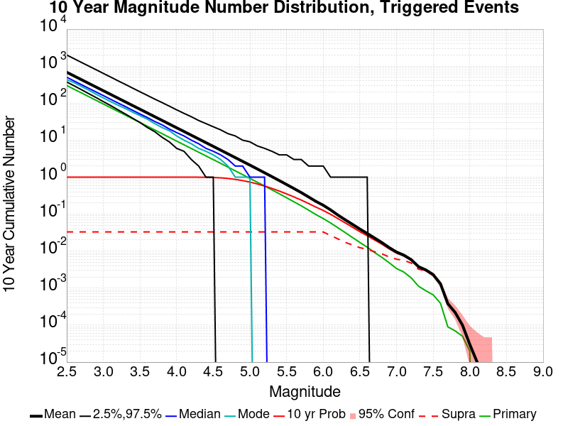
| Mag | Mean | 2.5 %ile | 97.5 %ile | Median | Mode | 10 yr Probability | 10 yr Supra-Seis Prob | Primary Aftershocks Mean |
|---|---|---|---|---|---|---|---|---|
| M≥2.5 | 684.771 | 375.000 | 2004.000 | 501.000 | 431.000 | 1.000 (100.00%) | 0.033 (3.30%) | 300.129 |
| M≥2.6 | 543.914 | 295.000 | 1593.000 | 399.000 | 358.000 | 1.000 (100.00%) | 0.033 (3.30%) | 238.393 |
| M≥2.7 | 432.003 | 232.000 | 1266.000 | 317.000 | 283.000 | 1.000 (100.00%) | 0.033 (3.30%) | 189.334 |
| M≥2.8 | 343.148 | 181.000 | 1008.000 | 252.000 | 225.000 | 1.000 (100.00%) | 0.033 (3.30%) | 150.385 |
| M≥2.9 | 272.532 | 142.000 | 802.000 | 201.000 | 175.000 | 1.000 (100.00%) | 0.033 (3.30%) | 119.426 |
| M≥3 | 216.473 | 110.000 | 637.000 | 160.000 | 138.000 | 1.000 (100.00%) | 0.033 (3.30%) | 94.855 |
| M≥3.1 | 171.960 | 86.000 | 507.000 | 127.000 | 110.000 | 1.000 (100.00%) | 0.033 (3.30%) | 75.361 |
| M≥3.2 | 136.550 | 66.000 | 402.000 | 101.000 | 88.000 | 1.000 (100.00%) | 0.033 (3.30%) | 59.851 |
| M≥3.3 | 108.446 | 51.000 | 321.000 | 81.000 | 72.000 | 1.000 (100.00%) | 0.033 (3.30%) | 47.533 |
| M≥3.4 | 86.134 | 39.000 | 255.000 | 64.000 | 57.000 | 1.000 (100.00%) | 0.033 (3.30%) | 37.759 |
| M≥3.5 | 68.400 | 30.000 | 203.000 | 51.000 | 46.000 | 1.000 (100.00%) | 0.033 (3.30%) | 29.988 |
| M≥3.6 | 54.335 | 22.000 | 162.000 | 41.000 | 37.000 | 1.000 (100.00%) | 0.033 (3.30%) | 23.818 |
| M≥3.7 | 43.149 | 17.000 | 129.000 | 32.000 | 28.000 | 1.000 (100.00%) | 0.033 (3.30%) | 18.910 |
| M≥3.8 | 34.278 | 12.000 | 104.000 | 26.000 | 22.000 | 1.000 (100.00%) | 0.033 (3.30%) | 15.018 |
| M≥3.9 | 27.212 | 9.000 | 83.000 | 20.000 | 18.000 | 1.000 (100.00%) | 0.033 (3.30%) | 11.920 |
| M≥4 | 21.595 | 6.000 | 66.000 | 16.000 | 13.000 | 1.000 (100.00%) | 0.033 (3.30%) | 9.449 |
| M≥4.1 | 17.147 | 5.000 | 53.000 | 13.000 | 10.000 | 1.000 (99.99%) | 0.033 (3.30%) | 7.506 |
| M≥4.2 | 13.605 | 3.000 | 43.000 | 10.000 | 8.000 | 0.999 (99.95%) | 0.033 (3.30%) | 5.954 |
| M≥4.3 | 10.788 | 2.000 | 34.000 | 8.000 | 6.000 | 0.998 (99.76%) | 0.033 (3.30%) | 4.726 |
| M≥4.4 | 8.552 | 1.000 | 28.000 | 6.000 | 5.000 | 0.992 (99.22%) | 0.033 (3.30%) | 3.749 |
| M≥4.5 | 6.784 | 1.000 | 23.000 | 5.000 | 4.000 | 0.980 (98.03%) | 0.033 (3.30%) | 2.976 |
| M≥4.6 | 5.381 | 0.000 | 19.000 | 4.000 | 3.000 | 0.957 (95.69%) | 0.033 (3.30%) | 2.359 |
| M≥4.7 | 4.262 | 0.000 | 15.000 | 3.000 | 2.000 | 0.921 (92.09%) | 0.033 (3.30%) | 1.868 |
| M≥4.8 | 3.373 | 0.000 | 13.000 | 2.000 | 1.000 | 0.871 (87.13%) | 0.033 (3.30%) | 1.480 |
| M≥4.9 | 2.671 | 0.000 | 10.000 | 2.000 | 1.000 | 0.807 (80.70%) | 0.033 (3.30%) | 1.170 |
| M≥5 | 2.113 | 0.000 | 9.000 | 1.000 | 1.000 | 0.734 (73.45%) | 0.033 (3.30%) | 0.925 |
| M≥5.1 | 1.667 | 0.000 | 7.000 | 1.000 | 0.000 | 0.656 (65.58%) | 0.033 (3.30%) | 0.731 |
| M≥5.2 | 1.313 | 0.000 | 6.000 | 1.000 | 0.000 | 0.575 (57.49%) | 0.033 (3.30%) | 0.577 |
| M≥5.3 | 1.032 | 0.000 | 5.000 | 0.000 | 0.000 | 0.496 (49.63%) | 0.033 (3.30%) | 0.454 |
| M≥5.4 | 0.809 | 0.000 | 4.000 | 0.000 | 0.000 | 0.421 (42.13%) | 0.033 (3.30%) | 0.356 |
| M≥5.5 | 0.632 | 0.000 | 4.000 | 0.000 | 0.000 | 0.353 (35.29%) | 0.033 (3.30%) | 0.278 |
| M≥5.6 | 0.493 | 0.000 | 3.000 | 0.000 | 0.000 | 0.293 (29.27%) | 0.033 (3.30%) | 0.216 |
| M≥5.7 | 0.382 | 0.000 | 3.000 | 0.000 | 0.000 | 0.240 (24.02%) | 0.033 (3.30%) | 0.168 |
| M≥5.8 | 0.292 | 0.000 | 2.000 | 0.000 | 0.000 | 0.194 (19.39%) | 0.033 (3.30%) | 0.128 |
| M≥5.9 | 0.221 | 0.000 | 2.000 | 0.000 | 0.000 | 0.155 (15.50%) | 0.033 (3.30%) | 0.097 |
| M≥6 | 0.174 | 0.000 | 2.000 | 0.000 | 0.000 | 0.126 (12.61%) | 0.033 (3.30%) | 0.076 |
| M≥6.1 | 0.131 | 0.000 | 1.000 | 0.000 | 0.000 | 0.099 (9.90%) | 0.026 (2.65%) | 0.058 |
| M≥6.2 | 0.095 | 0.000 | 1.000 | 0.000 | 0.000 | 0.076 (7.60%) | 0.021 (2.15%) | 0.043 |
| M≥6.3 | 0.070 | 0.000 | 1.000 | 0.000 | 0.000 | 0.058 (5.81%) | 0.017 (1.72%) | 0.032 |
| M≥6.4 | 0.053 | 0.000 | 1.000 | 0.000 | 0.000 | 0.044 (4.41%) | 0.015 (1.47%) | 0.023 |
| M≥6.5 | 0.040 | 0.000 | 1.000 | 0.000 | 0.000 | 0.034 (3.36%) | 0.012 (1.24%) | 0.017 |
| M≥6.6 | 0.030 | 0.000 | 1.000 | 0.000 | 0.000 | 0.026 (2.62%) | 0.011 (1.12%) | 0.013 |
| M≥6.7 | 0.023 | 0.000 | 0.000 | 0.000 | 0.000 | 0.020 (2.01%) | 9.63E-3 (0.96%) | 9.19E-3 |
| M≥6.8 | 0.017 | 0.000 | 0.000 | 0.000 | 0.000 | 0.016 (1.55%) | 8.47E-3 (0.85%) | 6.79E-3 |
| M≥6.9 | 0.012 | 0.000 | 0.000 | 0.000 | 0.000 | 0.012 (1.16%) | 6.96E-3 (0.70%) | 4.86E-3 |
| M≥7 | 9.45E-3 | 0.000 | 0.000 | 0.000 | 0.000 | 8.93E-3 (0.89%) | 6.06E-3 (0.61%) | 3.39E-3 |
| M≥7.1 | 7.79E-3 | 0.000 | 0.000 | 0.000 | 0.000 | 7.53E-3 (0.75%) | 5.64E-3 (0.56%) | 2.72E-3 |
| M≥7.2 | 5.90E-3 | 0.000 | 0.000 | 0.000 | 0.000 | 5.75E-3 (0.57%) | 4.78E-3 (0.48%) | 1.90E-3 |
| M≥7.3 | 3.81E-3 | 0.000 | 0.000 | 0.000 | 0.000 | 3.72E-3 (0.37%) | 3.26E-3 (0.33%) | 1.13E-3 |
| M≥7.4 | 3.10E-3 | 0.000 | 0.000 | 0.000 | 0.000 | 3.06E-3 (0.31%) | 2.91E-3 (0.29%) | 8.50E-4 |
| M≥7.5 | 2.32E-3 | 0.000 | 0.000 | 0.000 | 0.000 | 2.29E-3 (0.23%) | 2.23E-3 (0.22%) | 6.60E-4 |
| M≥7.6 | 1.31E-3 | 0.000 | 0.000 | 0.000 | 0.000 | 1.29E-3 (0.13%) | 1.28E-3 (0.13%) | 3.90E-4 |
| M≥7.7 | 3.80E-4 | 0.000 | 0.000 | 0.000 | 0.000 | 3.80E-4 (0.04%) | 3.80E-4 (0.04%) | 9.00E-5 |
| M≥7.8 | 2.20E-4 | 0.000 | 0.000 | 0.000 | 0.000 | 2.20E-4 (0.02%) | 2.20E-4 (0.02%) | 7.00E-5 |
| M≥7.9 | 1.00E-4 | 0.000 | 0.000 | 0.000 | 0.000 | 1.00E-4 (0.01%) | 1.00E-4 (0.01%) | 5.00E-5 |
| M≥8 | 3.00E-5 | 0.000 | 0.000 | 0.000 | 0.000 | 3.00E-5 (0.00%) | 3.00E-5 (0.00%) | 2.00E-5 |
| M≥8.1 | 1.00E-5 | 0.000 | 0.000 | 0.000 | 0.000 | 1.00E-5 (0.00%) | 1.00E-5 (0.00%) | 0.000 |
| M≥8.2 | 0.000 | 0.000 | 0.000 | 0.000 | 0.000 | 0.000 (0.00%) | 0.000 (0.00%) | 0.000 |
| M≥8.3 | 0.000 | 0.000 | 0.000 | 0.000 | 0.000 | 0.000 (0.00%) | 0.000 (0.00%) | 0.000 |
| M≥8.4 | 0.000 | 0.000 | 0.000 | 0.000 | 0.000 | 0.000 (0.00%) | 0.000 (0.00%) | 0.000 |
| M≥8.5 | 0.000 | 0.000 | 0.000 | 0.000 | 0.000 | 0.000 (0.00%) | 0.000 (0.00%) | 0.000 |
| M≥8.6 | 0.000 | 0.000 | 0.000 | 0.000 | 0.000 | 0.000 (0.00%) | 0.000 (0.00%) | 0.000 |
| M≥8.7 | 0.000 | 0.000 | 0.000 | 0.000 | 0.000 | 0.000 (0.00%) | 0.000 (0.00%) | 0.000 |
| M≥8.8 | 0.000 | 0.000 | 0.000 | 0.000 | 0.000 | 0.000 (0.00%) | 0.000 (0.00%) | 0.000 |
| M≥8.9 | 0.000 | 0.000 | 0.000 | 0.000 | 0.000 | 0.000 (0.00%) | 0.000 (0.00%) | 0.000 |
| M≥9 | 0.000 | 0.000 | 0.000 | 0.000 | 0.000 | 0.000 (0.00%) | 0.000 (0.00%) | 0.000 |
Legend
| Mag | Mean | 2.5 %ile | 97.5 %ile | Median | Mode | 1 yr Probability | 1 yr Supra-Seis Prob | Primary Aftershocks Mean |
|---|---|---|---|---|---|---|---|---|
| M≥2.5 | 454.410 | 269.000 | 1198.000 | 352.000 | 322.000 | 1.000 (100.00%) | 0.021 (2.14%) | 231.622 |
| M≥2.6 | 360.911 | 211.000 | 954.000 | 280.000 | 255.000 | 1.000 (100.00%) | 0.021 (2.14%) | 183.979 |
| M≥2.7 | 286.643 | 165.000 | 757.000 | 223.000 | 205.000 | 1.000 (100.00%) | 0.021 (2.14%) | 146.122 |
| M≥2.8 | 227.686 | 129.000 | 602.000 | 177.000 | 158.000 | 1.000 (100.00%) | 0.021 (2.14%) | 116.073 |
| M≥2.9 | 180.822 | 100.000 | 480.000 | 141.000 | 124.000 | 1.000 (100.00%) | 0.021 (2.14%) | 92.181 |
| M≥3 | 143.629 | 78.000 | 382.000 | 112.000 | 100.000 | 1.000 (100.00%) | 0.021 (2.14%) | 73.214 |
| M≥3.1 | 114.094 | 60.000 | 303.000 | 89.000 | 82.000 | 1.000 (100.00%) | 0.021 (2.14%) | 58.169 |
| M≥3.2 | 90.616 | 46.000 | 242.000 | 71.000 | 62.000 | 1.000 (100.00%) | 0.021 (2.14%) | 46.203 |
| M≥3.3 | 71.958 | 35.000 | 193.000 | 57.000 | 51.000 | 1.000 (100.00%) | 0.021 (2.14%) | 36.687 |
| M≥3.4 | 57.154 | 27.000 | 153.000 | 45.000 | 40.000 | 1.000 (100.00%) | 0.021 (2.14%) | 29.144 |
| M≥3.5 | 45.384 | 20.000 | 122.000 | 36.000 | 33.000 | 1.000 (100.00%) | 0.021 (2.14%) | 23.142 |
| M≥3.6 | 36.047 | 15.000 | 98.000 | 28.000 | 24.000 | 1.000 (100.00%) | 0.021 (2.14%) | 18.379 |
| M≥3.7 | 28.631 | 11.000 | 78.000 | 23.000 | 20.000 | 1.000 (100.00%) | 0.021 (2.14%) | 14.595 |
| M≥3.8 | 22.747 | 8.000 | 63.000 | 18.000 | 16.000 | 1.000 (100.00%) | 0.021 (2.14%) | 11.593 |
| M≥3.9 | 18.055 | 6.000 | 50.000 | 14.000 | 12.000 | 1.000 (100.00%) | 0.021 (2.14%) | 9.200 |
| M≥4 | 14.325 | 4.000 | 41.000 | 11.000 | 10.000 | 1.000 (99.98%) | 0.021 (2.14%) | 7.294 |
| M≥4.1 | 11.373 | 3.000 | 33.000 | 9.000 | 7.000 | 0.999 (99.90%) | 0.021 (2.14%) | 5.794 |
| M≥4.2 | 9.025 | 2.000 | 27.000 | 7.000 | 6.000 | 0.996 (99.61%) | 0.021 (2.14%) | 4.599 |
| M≥4.3 | 7.157 | 1.000 | 22.000 | 6.000 | 5.000 | 0.989 (98.88%) | 0.021 (2.14%) | 3.652 |
| M≥4.4 | 5.670 | 0.000 | 18.000 | 4.000 | 3.000 | 0.974 (97.37%) | 0.021 (2.14%) | 2.895 |
| M≥4.5 | 4.500 | 0.000 | 15.000 | 3.000 | 2.000 | 0.946 (94.56%) | 0.021 (2.14%) | 2.299 |
| M≥4.6 | 3.572 | 0.000 | 12.000 | 3.000 | 2.000 | 0.903 (90.34%) | 0.021 (2.14%) | 1.823 |
| M≥4.7 | 2.830 | 0.000 | 10.000 | 2.000 | 1.000 | 0.847 (84.68%) | 0.021 (2.14%) | 1.444 |
| M≥4.8 | 2.243 | 0.000 | 8.000 | 2.000 | 1.000 | 0.780 (77.95%) | 0.021 (2.14%) | 1.145 |
| M≥4.9 | 1.776 | 0.000 | 7.000 | 1.000 | 0.000 | 0.702 (70.21%) | 0.021 (2.14%) | 0.906 |
| M≥5 | 1.404 | 0.000 | 6.000 | 1.000 | 0.000 | 0.622 (62.16%) | 0.021 (2.14%) | 0.716 |
| M≥5.1 | 1.106 | 0.000 | 5.000 | 1.000 | 0.000 | 0.541 (54.11%) | 0.021 (2.14%) | 0.564 |
| M≥5.2 | 0.871 | 0.000 | 4.000 | 0.000 | 0.000 | 0.464 (46.38%) | 0.021 (2.14%) | 0.445 |
| M≥5.3 | 0.684 | 0.000 | 4.000 | 0.000 | 0.000 | 0.392 (39.24%) | 0.021 (2.14%) | 0.350 |
| M≥5.4 | 0.536 | 0.000 | 3.000 | 0.000 | 0.000 | 0.327 (32.69%) | 0.021 (2.14%) | 0.274 |
| M≥5.5 | 0.418 | 0.000 | 3.000 | 0.000 | 0.000 | 0.269 (26.89%) | 0.021 (2.14%) | 0.213 |
| M≥5.6 | 0.326 | 0.000 | 2.000 | 0.000 | 0.000 | 0.220 (22.01%) | 0.021 (2.14%) | 0.166 |
| M≥5.7 | 0.253 | 0.000 | 2.000 | 0.000 | 0.000 | 0.178 (17.80%) | 0.021 (2.14%) | 0.129 |
| M≥5.8 | 0.194 | 0.000 | 2.000 | 0.000 | 0.000 | 0.142 (14.18%) | 0.021 (2.14%) | 0.099 |
| M≥5.9 | 0.147 | 0.000 | 1.000 | 0.000 | 0.000 | 0.112 (11.23%) | 0.021 (2.14%) | 0.075 |
| M≥6 | 0.115 | 0.000 | 1.000 | 0.000 | 0.000 | 0.090 (9.03%) | 0.021 (2.14%) | 0.058 |
| M≥6.1 | 0.087 | 0.000 | 1.000 | 0.000 | 0.000 | 0.070 (7.01%) | 0.017 (1.71%) | 0.044 |
| M≥6.2 | 0.063 | 0.000 | 1.000 | 0.000 | 0.000 | 0.054 (5.35%) | 0.014 (1.40%) | 0.033 |
| M≥6.3 | 0.047 | 0.000 | 1.000 | 0.000 | 0.000 | 0.041 (4.08%) | 0.011 (1.12%) | 0.025 |
| M≥6.4 | 0.035 | 0.000 | 1.000 | 0.000 | 0.000 | 0.031 (3.08%) | 9.48E-3 (0.95%) | 0.018 |
| M≥6.5 | 0.026 | 0.000 | 0.000 | 0.000 | 0.000 | 0.023 (2.31%) | 7.97E-3 (0.80%) | 0.013 |
| M≥6.6 | 0.020 | 0.000 | 0.000 | 0.000 | 0.000 | 0.018 (1.79%) | 7.15E-3 (0.71%) | 9.84E-3 |
| M≥6.7 | 0.015 | 0.000 | 0.000 | 0.000 | 0.000 | 0.013 (1.34%) | 6.02E-3 (0.60%) | 7.05E-3 |
| M≥6.8 | 0.011 | 0.000 | 0.000 | 0.000 | 0.000 | 0.010 (1.03%) | 5.34E-3 (0.53%) | 5.26E-3 |
| M≥6.9 | 7.90E-3 | 0.000 | 0.000 | 0.000 | 0.000 | 7.59E-3 (0.76%) | 4.37E-3 (0.44%) | 3.76E-3 |
| M≥7 | 5.88E-3 | 0.000 | 0.000 | 0.000 | 0.000 | 5.66E-3 (0.57%) | 3.72E-3 (0.37%) | 2.62E-3 |
| M≥7.1 | 4.83E-3 | 0.000 | 0.000 | 0.000 | 0.000 | 4.72E-3 (0.47%) | 3.45E-3 (0.34%) | 2.13E-3 |
| M≥7.2 | 3.57E-3 | 0.000 | 0.000 | 0.000 | 0.000 | 3.52E-3 (0.35%) | 2.88E-3 (0.29%) | 1.45E-3 |
| M≥7.3 | 2.39E-3 | 0.000 | 0.000 | 0.000 | 0.000 | 2.35E-3 (0.24%) | 2.03E-3 (0.20%) | 8.80E-4 |
| M≥7.4 | 1.89E-3 | 0.000 | 0.000 | 0.000 | 0.000 | 1.86E-3 (0.19%) | 1.76E-3 (0.18%) | 6.50E-4 |
| M≥7.5 | 1.44E-3 | 0.000 | 0.000 | 0.000 | 0.000 | 1.42E-3 (0.14%) | 1.38E-3 (0.14%) | 5.30E-4 |
| M≥7.6 | 8.50E-4 | 0.000 | 0.000 | 0.000 | 0.000 | 8.40E-4 (0.08%) | 8.30E-4 (0.08%) | 3.40E-4 |
| M≥7.7 | 2.10E-4 | 0.000 | 0.000 | 0.000 | 0.000 | 2.10E-4 (0.02%) | 2.10E-4 (0.02%) | 9.00E-5 |
| M≥7.8 | 1.10E-4 | 0.000 | 0.000 | 0.000 | 0.000 | 1.10E-4 (0.01%) | 1.10E-4 (0.01%) | 7.00E-5 |
| M≥7.9 | 5.00E-5 | 0.000 | 0.000 | 0.000 | 0.000 | 5.00E-5 (0.01%) | 5.00E-5 (0.01%) | 5.00E-5 |
| M≥8 | 2.00E-5 | 0.000 | 0.000 | 0.000 | 0.000 | 2.00E-5 (0.00%) | 2.00E-5 (0.00%) | 2.00E-5 |
| M≥8.1 | 0.000 | 0.000 | 0.000 | 0.000 | 0.000 | 0.000 (0.00%) | 0.000 (0.00%) | 0.000 |
| M≥8.2 | 0.000 | 0.000 | 0.000 | 0.000 | 0.000 | 0.000 (0.00%) | 0.000 (0.00%) | 0.000 |
| M≥8.3 | 0.000 | 0.000 | 0.000 | 0.000 | 0.000 | 0.000 (0.00%) | 0.000 (0.00%) | 0.000 |
| M≥8.4 | 0.000 | 0.000 | 0.000 | 0.000 | 0.000 | 0.000 (0.00%) | 0.000 (0.00%) | 0.000 |
| M≥8.5 | 0.000 | 0.000 | 0.000 | 0.000 | 0.000 | 0.000 (0.00%) | 0.000 (0.00%) | 0.000 |
| M≥8.6 | 0.000 | 0.000 | 0.000 | 0.000 | 0.000 | 0.000 (0.00%) | 0.000 (0.00%) | 0.000 |
| M≥8.7 | 0.000 | 0.000 | 0.000 | 0.000 | 0.000 | 0.000 (0.00%) | 0.000 (0.00%) | 0.000 |
| M≥8.8 | 0.000 | 0.000 | 0.000 | 0.000 | 0.000 | 0.000 (0.00%) | 0.000 (0.00%) | 0.000 |
| M≥8.9 | 0.000 | 0.000 | 0.000 | 0.000 | 0.000 | 0.000 (0.00%) | 0.000 (0.00%) | 0.000 |
| M≥9 | 0.000 | 0.000 | 0.000 | 0.000 | 0.000 | 0.000 (0.00%) | 0.000 (0.00%) | 0.000 |
Legend

| Mag | Mean | 2.5 %ile | 97.5 %ile | Median | Mode | 1 mo Probability | 1 mo Supra-Seis Prob | Primary Aftershocks Mean |
|---|---|---|---|---|---|---|---|---|
| M≥2.5 | 241.258 | 151.000 | 559.000 | 197.000 | 181.000 | 1.000 (100.00%) | 0.011 (1.08%) | 144.991 |
| M≥2.6 | 191.610 | 118.000 | 444.000 | 157.000 | 147.000 | 1.000 (100.00%) | 0.011 (1.08%) | 115.177 |
| M≥2.7 | 152.180 | 92.000 | 352.000 | 125.000 | 119.000 | 1.000 (100.00%) | 0.011 (1.08%) | 91.480 |
| M≥2.8 | 120.873 | 71.000 | 280.000 | 100.000 | 95.000 | 1.000 (100.00%) | 0.011 (1.08%) | 72.660 |
| M≥2.9 | 96.002 | 55.000 | 224.000 | 79.000 | 74.000 | 1.000 (100.00%) | 0.011 (1.08%) | 57.708 |
| M≥3 | 76.250 | 42.000 | 178.000 | 63.000 | 57.000 | 1.000 (100.00%) | 0.011 (1.08%) | 45.828 |
| M≥3.1 | 60.577 | 32.000 | 143.000 | 50.000 | 47.000 | 1.000 (100.00%) | 0.011 (1.08%) | 36.414 |
| M≥3.2 | 48.114 | 24.000 | 114.000 | 40.000 | 37.000 | 1.000 (100.00%) | 0.011 (1.08%) | 28.924 |
| M≥3.3 | 38.213 | 18.000 | 91.000 | 32.000 | 28.000 | 1.000 (100.00%) | 0.011 (1.08%) | 22.974 |
| M≥3.4 | 30.359 | 13.000 | 73.000 | 25.000 | 22.000 | 1.000 (100.00%) | 0.011 (1.08%) | 18.252 |
| M≥3.5 | 24.108 | 10.000 | 58.000 | 20.000 | 18.000 | 1.000 (100.00%) | 0.011 (1.08%) | 14.493 |
| M≥3.6 | 19.144 | 7.000 | 47.000 | 16.000 | 14.000 | 1.000 (100.00%) | 0.011 (1.08%) | 11.510 |
| M≥3.7 | 15.201 | 5.000 | 38.000 | 13.000 | 11.000 | 1.000 (100.00%) | 0.011 (1.08%) | 9.136 |
| M≥3.8 | 12.073 | 3.000 | 31.000 | 10.000 | 8.000 | 1.000 (99.97%) | 0.011 (1.08%) | 7.253 |
| M≥3.9 | 9.582 | 2.000 | 25.000 | 8.000 | 7.000 | 0.998 (99.84%) | 0.011 (1.08%) | 5.758 |
| M≥4 | 7.600 | 1.000 | 20.000 | 6.000 | 5.000 | 0.994 (99.44%) | 0.011 (1.08%) | 4.565 |
| M≥4.1 | 6.033 | 1.000 | 17.000 | 5.000 | 4.000 | 0.985 (98.45%) | 0.011 (1.08%) | 3.626 |
| M≥4.2 | 4.789 | 0.000 | 14.000 | 4.000 | 3.000 | 0.965 (96.53%) | 0.011 (1.08%) | 2.878 |
| M≥4.3 | 3.798 | 0.000 | 11.000 | 3.000 | 2.000 | 0.933 (93.29%) | 0.011 (1.08%) | 2.287 |
| M≥4.4 | 3.011 | 0.000 | 10.000 | 2.000 | 2.000 | 0.885 (88.50%) | 0.011 (1.08%) | 1.814 |
| M≥4.5 | 2.390 | 0.000 | 8.000 | 2.000 | 1.000 | 0.825 (82.48%) | 0.011 (1.08%) | 1.442 |
| M≥4.6 | 1.898 | 0.000 | 7.000 | 1.000 | 1.000 | 0.752 (75.18%) | 0.011 (1.08%) | 1.144 |
| M≥4.7 | 1.504 | 0.000 | 6.000 | 1.000 | 0.000 | 0.673 (67.28%) | 0.011 (1.08%) | 0.907 |
| M≥4.8 | 1.191 | 0.000 | 5.000 | 1.000 | 0.000 | 0.591 (59.13%) | 0.011 (1.08%) | 0.718 |
| M≥4.9 | 0.942 | 0.000 | 4.000 | 1.000 | 0.000 | 0.511 (51.12%) | 0.011 (1.08%) | 0.568 |
| M≥5 | 0.745 | 0.000 | 4.000 | 0.000 | 0.000 | 0.435 (43.53%) | 0.011 (1.08%) | 0.449 |
| M≥5.1 | 0.588 | 0.000 | 3.000 | 0.000 | 0.000 | 0.366 (36.63%) | 0.011 (1.08%) | 0.354 |
| M≥5.2 | 0.463 | 0.000 | 3.000 | 0.000 | 0.000 | 0.305 (30.51%) | 0.011 (1.08%) | 0.279 |
| M≥5.3 | 0.364 | 0.000 | 2.000 | 0.000 | 0.000 | 0.252 (25.17%) | 0.011 (1.08%) | 0.220 |
| M≥5.4 | 0.284 | 0.000 | 2.000 | 0.000 | 0.000 | 0.205 (20.49%) | 0.011 (1.08%) | 0.173 |
| M≥5.5 | 0.222 | 0.000 | 2.000 | 0.000 | 0.000 | 0.165 (16.53%) | 0.011 (1.08%) | 0.134 |
| M≥5.6 | 0.173 | 0.000 | 2.000 | 0.000 | 0.000 | 0.133 (13.29%) | 0.011 (1.08%) | 0.105 |
| M≥5.7 | 0.135 | 0.000 | 1.000 | 0.000 | 0.000 | 0.106 (10.63%) | 0.011 (1.08%) | 0.082 |
| M≥5.8 | 0.103 | 0.000 | 1.000 | 0.000 | 0.000 | 0.083 (8.34%) | 0.011 (1.08%) | 0.062 |
| M≥5.9 | 0.078 | 0.000 | 1.000 | 0.000 | 0.000 | 0.065 (6.53%) | 0.011 (1.08%) | 0.047 |
| M≥6 | 0.062 | 0.000 | 1.000 | 0.000 | 0.000 | 0.052 (5.23%) | 0.011 (1.08%) | 0.037 |
| M≥6.1 | 0.046 | 0.000 | 1.000 | 0.000 | 0.000 | 0.040 (4.00%) | 8.71E-3 (0.87%) | 0.028 |
| M≥6.2 | 0.034 | 0.000 | 1.000 | 0.000 | 0.000 | 0.030 (3.00%) | 7.14E-3 (0.71%) | 0.021 |
| M≥6.3 | 0.026 | 0.000 | 0.000 | 0.000 | 0.000 | 0.023 (2.30%) | 5.78E-3 (0.58%) | 0.015 |
| M≥6.4 | 0.019 | 0.000 | 0.000 | 0.000 | 0.000 | 0.017 (1.72%) | 4.97E-3 (0.50%) | 0.011 |
| M≥6.5 | 0.014 | 0.000 | 0.000 | 0.000 | 0.000 | 0.013 (1.27%) | 4.13E-3 (0.41%) | 8.26E-3 |
| M≥6.6 | 0.010 | 0.000 | 0.000 | 0.000 | 0.000 | 9.68E-3 (0.97%) | 3.73E-3 (0.37%) | 6.05E-3 |
| M≥6.7 | 7.78E-3 | 0.000 | 0.000 | 0.000 | 0.000 | 7.30E-3 (0.73%) | 3.15E-3 (0.32%) | 4.31E-3 |
| M≥6.8 | 5.72E-3 | 0.000 | 0.000 | 0.000 | 0.000 | 5.47E-3 (0.55%) | 2.77E-3 (0.28%) | 3.13E-3 |
| M≥6.9 | 4.10E-3 | 0.000 | 0.000 | 0.000 | 0.000 | 3.98E-3 (0.40%) | 2.23E-3 (0.22%) | 2.25E-3 |
| M≥7 | 2.96E-3 | 0.000 | 0.000 | 0.000 | 0.000 | 2.87E-3 (0.29%) | 1.91E-3 (0.19%) | 1.53E-3 |
| M≥7.1 | 2.44E-3 | 0.000 | 0.000 | 0.000 | 0.000 | 2.41E-3 (0.24%) | 1.77E-3 (0.18%) | 1.25E-3 |
| M≥7.2 | 1.82E-3 | 0.000 | 0.000 | 0.000 | 0.000 | 1.79E-3 (0.18%) | 1.47E-3 (0.15%) | 8.70E-4 |
| M≥7.3 | 1.25E-3 | 0.000 | 0.000 | 0.000 | 0.000 | 1.23E-3 (0.12%) | 1.08E-3 (0.11%) | 5.20E-4 |
| M≥7.4 | 9.70E-4 | 0.000 | 0.000 | 0.000 | 0.000 | 9.60E-4 (0.10%) | 9.00E-4 (0.09%) | 4.20E-4 |
| M≥7.5 | 7.60E-4 | 0.000 | 0.000 | 0.000 | 0.000 | 7.50E-4 (0.07%) | 7.20E-4 (0.07%) | 3.40E-4 |
| M≥7.6 | 4.50E-4 | 0.000 | 0.000 | 0.000 | 0.000 | 4.40E-4 (0.04%) | 4.30E-4 (0.04%) | 2.10E-4 |
| M≥7.7 | 9.00E-5 | 0.000 | 0.000 | 0.000 | 0.000 | 9.00E-5 (0.01%) | 9.00E-5 (0.01%) | 6.00E-5 |
| M≥7.8 | 6.00E-5 | 0.000 | 0.000 | 0.000 | 0.000 | 6.00E-5 (0.01%) | 6.00E-5 (0.01%) | 4.00E-5 |
| M≥7.9 | 4.00E-5 | 0.000 | 0.000 | 0.000 | 0.000 | 4.00E-5 (0.00%) | 4.00E-5 (0.00%) | 4.00E-5 |
| M≥8 | 2.00E-5 | 0.000 | 0.000 | 0.000 | 0.000 | 2.00E-5 (0.00%) | 2.00E-5 (0.00%) | 2.00E-5 |
| M≥8.1 | 0.000 | 0.000 | 0.000 | 0.000 | 0.000 | 0.000 (0.00%) | 0.000 (0.00%) | 0.000 |
| M≥8.2 | 0.000 | 0.000 | 0.000 | 0.000 | 0.000 | 0.000 (0.00%) | 0.000 (0.00%) | 0.000 |
| M≥8.3 | 0.000 | 0.000 | 0.000 | 0.000 | 0.000 | 0.000 (0.00%) | 0.000 (0.00%) | 0.000 |
| M≥8.4 | 0.000 | 0.000 | 0.000 | 0.000 | 0.000 | 0.000 (0.00%) | 0.000 (0.00%) | 0.000 |
| M≥8.5 | 0.000 | 0.000 | 0.000 | 0.000 | 0.000 | 0.000 (0.00%) | 0.000 (0.00%) | 0.000 |
| M≥8.6 | 0.000 | 0.000 | 0.000 | 0.000 | 0.000 | 0.000 (0.00%) | 0.000 (0.00%) | 0.000 |
| M≥8.7 | 0.000 | 0.000 | 0.000 | 0.000 | 0.000 | 0.000 (0.00%) | 0.000 (0.00%) | 0.000 |
| M≥8.8 | 0.000 | 0.000 | 0.000 | 0.000 | 0.000 | 0.000 (0.00%) | 0.000 (0.00%) | 0.000 |
| M≥8.9 | 0.000 | 0.000 | 0.000 | 0.000 | 0.000 | 0.000 (0.00%) | 0.000 (0.00%) | 0.000 |
| M≥9 | 0.000 | 0.000 | 0.000 | 0.000 | 0.000 | 0.000 (0.00%) | 0.000 (0.00%) | 0.000 |
Legend

| Mag | Mean | 2.5 %ile | 97.5 %ile | Median | Mode | 1 wk Probability | 1 wk Supra-Seis Prob | Primary Aftershocks Mean |
|---|---|---|---|---|---|---|---|---|
| M≥2.5 | 137.940 | 87.000 | 291.000 | 117.000 | 112.000 | 1.000 (100.00%) | 6.15E-3 (0.61%) | 91.609 |
| M≥2.6 | 109.556 | 67.000 | 232.000 | 93.000 | 87.000 | 1.000 (100.00%) | 6.15E-3 (0.61%) | 72.770 |
| M≥2.7 | 87.004 | 52.000 | 185.000 | 74.000 | 71.000 | 1.000 (100.00%) | 6.15E-3 (0.61%) | 57.793 |
| M≥2.8 | 69.105 | 39.000 | 148.000 | 59.000 | 55.000 | 1.000 (100.00%) | 6.15E-3 (0.61%) | 45.902 |
| M≥2.9 | 54.874 | 30.000 | 118.000 | 47.000 | 44.000 | 1.000 (100.00%) | 6.15E-3 (0.61%) | 36.450 |
| M≥3 | 43.586 | 23.000 | 94.000 | 37.000 | 36.000 | 1.000 (100.00%) | 6.15E-3 (0.61%) | 28.951 |
| M≥3.1 | 34.625 | 17.000 | 76.000 | 30.000 | 28.000 | 1.000 (100.00%) | 6.15E-3 (0.61%) | 23.002 |
| M≥3.2 | 27.508 | 13.000 | 61.000 | 23.000 | 22.000 | 1.000 (100.00%) | 6.15E-3 (0.61%) | 18.276 |
| M≥3.3 | 21.844 | 9.000 | 49.000 | 19.000 | 17.000 | 1.000 (100.00%) | 6.15E-3 (0.61%) | 14.519 |
| M≥3.4 | 17.355 | 7.000 | 39.000 | 15.000 | 14.000 | 1.000 (100.00%) | 6.15E-3 (0.61%) | 11.534 |
| M≥3.5 | 13.784 | 5.000 | 32.000 | 12.000 | 11.000 | 1.000 (100.00%) | 6.15E-3 (0.61%) | 9.160 |
| M≥3.6 | 10.944 | 3.000 | 26.000 | 9.000 | 8.000 | 1.000 (99.97%) | 6.15E-3 (0.61%) | 7.273 |
| M≥3.7 | 8.689 | 2.000 | 21.000 | 7.000 | 6.000 | 0.998 (99.83%) | 6.15E-3 (0.61%) | 5.771 |
| M≥3.8 | 6.902 | 1.000 | 17.000 | 6.000 | 5.000 | 0.993 (99.35%) | 6.15E-3 (0.61%) | 4.582 |
| M≥3.9 | 5.480 | 1.000 | 14.000 | 5.000 | 4.000 | 0.982 (98.18%) | 6.15E-3 (0.61%) | 3.638 |
| M≥4 | 4.347 | 0.000 | 12.000 | 4.000 | 3.000 | 0.960 (95.95%) | 6.15E-3 (0.61%) | 2.886 |
| M≥4.1 | 3.454 | 0.000 | 10.000 | 3.000 | 2.000 | 0.925 (92.52%) | 6.15E-3 (0.61%) | 2.294 |
| M≥4.2 | 2.741 | 0.000 | 8.000 | 2.000 | 2.000 | 0.875 (87.46%) | 6.15E-3 (0.61%) | 1.820 |
| M≥4.3 | 2.174 | 0.000 | 7.000 | 2.000 | 1.000 | 0.811 (81.08%) | 6.15E-3 (0.61%) | 1.445 |
| M≥4.4 | 1.724 | 0.000 | 6.000 | 1.000 | 1.000 | 0.736 (73.59%) | 6.15E-3 (0.61%) | 1.147 |
| M≥4.5 | 1.368 | 0.000 | 5.000 | 1.000 | 0.000 | 0.656 (65.60%) | 6.15E-3 (0.61%) | 0.909 |
| M≥4.6 | 1.087 | 0.000 | 4.000 | 1.000 | 0.000 | 0.574 (57.39%) | 6.15E-3 (0.61%) | 0.722 |
| M≥4.7 | 0.861 | 0.000 | 4.000 | 0.000 | 0.000 | 0.494 (49.38%) | 6.15E-3 (0.61%) | 0.572 |
| M≥4.8 | 0.682 | 0.000 | 3.000 | 0.000 | 0.000 | 0.419 (41.92%) | 6.15E-3 (0.61%) | 0.452 |
| M≥4.9 | 0.539 | 0.000 | 3.000 | 0.000 | 0.000 | 0.352 (35.17%) | 6.15E-3 (0.61%) | 0.357 |
| M≥5 | 0.426 | 0.000 | 3.000 | 0.000 | 0.000 | 0.292 (29.17%) | 6.15E-3 (0.61%) | 0.281 |
| M≥5.1 | 0.336 | 0.000 | 2.000 | 0.000 | 0.000 | 0.240 (24.01%) | 6.15E-3 (0.61%) | 0.222 |
| M≥5.2 | 0.265 | 0.000 | 2.000 | 0.000 | 0.000 | 0.197 (19.66%) | 6.15E-3 (0.61%) | 0.175 |
| M≥5.3 | 0.209 | 0.000 | 2.000 | 0.000 | 0.000 | 0.160 (16.00%) | 6.15E-3 (0.61%) | 0.138 |
| M≥5.4 | 0.164 | 0.000 | 1.000 | 0.000 | 0.000 | 0.129 (12.92%) | 6.15E-3 (0.61%) | 0.108 |
| M≥5.5 | 0.127 | 0.000 | 1.000 | 0.000 | 0.000 | 0.103 (10.27%) | 6.15E-3 (0.61%) | 0.084 |
| M≥5.6 | 0.099 | 0.000 | 1.000 | 0.000 | 0.000 | 0.082 (8.17%) | 6.15E-3 (0.61%) | 0.065 |
| M≥5.7 | 0.077 | 0.000 | 1.000 | 0.000 | 0.000 | 0.064 (6.44%) | 6.15E-3 (0.61%) | 0.051 |
| M≥5.8 | 0.059 | 0.000 | 1.000 | 0.000 | 0.000 | 0.050 (5.02%) | 6.15E-3 (0.61%) | 0.039 |
| M≥5.9 | 0.044 | 0.000 | 1.000 | 0.000 | 0.000 | 0.039 (3.89%) | 6.15E-3 (0.61%) | 0.029 |
| M≥6 | 0.035 | 0.000 | 1.000 | 0.000 | 0.000 | 0.031 (3.09%) | 6.14E-3 (0.61%) | 0.023 |
| M≥6.1 | 0.026 | 0.000 | 0.000 | 0.000 | 0.000 | 0.023 (2.34%) | 4.97E-3 (0.50%) | 0.017 |
| M≥6.2 | 0.019 | 0.000 | 0.000 | 0.000 | 0.000 | 0.017 (1.75%) | 4.12E-3 (0.41%) | 0.012 |
| M≥6.3 | 0.015 | 0.000 | 0.000 | 0.000 | 0.000 | 0.013 (1.35%) | 3.32E-3 (0.33%) | 9.48E-3 |
| M≥6.4 | 0.011 | 0.000 | 0.000 | 0.000 | 0.000 | 9.99E-3 (1.00%) | 2.87E-3 (0.29%) | 6.91E-3 |
| M≥6.5 | 7.92E-3 | 0.000 | 0.000 | 0.000 | 0.000 | 7.36E-3 (0.74%) | 2.40E-3 (0.24%) | 4.97E-3 |
| M≥6.6 | 6.03E-3 | 0.000 | 0.000 | 0.000 | 0.000 | 5.69E-3 (0.57%) | 2.20E-3 (0.22%) | 3.72E-3 |
| M≥6.7 | 4.67E-3 | 0.000 | 0.000 | 0.000 | 0.000 | 4.46E-3 (0.45%) | 1.85E-3 (0.18%) | 2.78E-3 |
| M≥6.8 | 3.44E-3 | 0.000 | 0.000 | 0.000 | 0.000 | 3.34E-3 (0.33%) | 1.62E-3 (0.16%) | 2.00E-3 |
| M≥6.9 | 2.54E-3 | 0.000 | 0.000 | 0.000 | 0.000 | 2.47E-3 (0.25%) | 1.33E-3 (0.13%) | 1.47E-3 |
| M≥7 | 1.84E-3 | 0.000 | 0.000 | 0.000 | 0.000 | 1.78E-3 (0.18%) | 1.16E-3 (0.12%) | 9.90E-4 |
| M≥7.1 | 1.49E-3 | 0.000 | 0.000 | 0.000 | 0.000 | 1.46E-3 (0.15%) | 1.06E-3 (0.11%) | 8.20E-4 |
| M≥7.2 | 1.12E-3 | 0.000 | 0.000 | 0.000 | 0.000 | 1.09E-3 (0.11%) | 8.90E-4 (0.09%) | 5.70E-4 |
| M≥7.3 | 7.30E-4 | 0.000 | 0.000 | 0.000 | 0.000 | 7.10E-4 (0.07%) | 6.40E-4 (0.06%) | 3.10E-4 |
| M≥7.4 | 5.40E-4 | 0.000 | 0.000 | 0.000 | 0.000 | 5.30E-4 (0.05%) | 5.00E-4 (0.05%) | 2.40E-4 |
| M≥7.5 | 4.30E-4 | 0.000 | 0.000 | 0.000 | 0.000 | 4.20E-4 (0.04%) | 4.00E-4 (0.04%) | 2.00E-4 |
| M≥7.6 | 2.90E-4 | 0.000 | 0.000 | 0.000 | 0.000 | 2.80E-4 (0.03%) | 2.70E-4 (0.03%) | 1.40E-4 |
| M≥7.7 | 6.00E-5 | 0.000 | 0.000 | 0.000 | 0.000 | 6.00E-5 (0.01%) | 6.00E-5 (0.01%) | 4.00E-5 |
| M≥7.8 | 3.00E-5 | 0.000 | 0.000 | 0.000 | 0.000 | 3.00E-5 (0.00%) | 3.00E-5 (0.00%) | 2.00E-5 |
| M≥7.9 | 2.00E-5 | 0.000 | 0.000 | 0.000 | 0.000 | 2.00E-5 (0.00%) | 2.00E-5 (0.00%) | 2.00E-5 |
| M≥8 | 2.00E-5 | 0.000 | 0.000 | 0.000 | 0.000 | 2.00E-5 (0.00%) | 2.00E-5 (0.00%) | 2.00E-5 |
| M≥8.1 | 0.000 | 0.000 | 0.000 | 0.000 | 0.000 | 0.000 (0.00%) | 0.000 (0.00%) | 0.000 |
| M≥8.2 | 0.000 | 0.000 | 0.000 | 0.000 | 0.000 | 0.000 (0.00%) | 0.000 (0.00%) | 0.000 |
| M≥8.3 | 0.000 | 0.000 | 0.000 | 0.000 | 0.000 | 0.000 (0.00%) | 0.000 (0.00%) | 0.000 |
| M≥8.4 | 0.000 | 0.000 | 0.000 | 0.000 | 0.000 | 0.000 (0.00%) | 0.000 (0.00%) | 0.000 |
| M≥8.5 | 0.000 | 0.000 | 0.000 | 0.000 | 0.000 | 0.000 (0.00%) | 0.000 (0.00%) | 0.000 |
| M≥8.6 | 0.000 | 0.000 | 0.000 | 0.000 | 0.000 | 0.000 (0.00%) | 0.000 (0.00%) | 0.000 |
| M≥8.7 | 0.000 | 0.000 | 0.000 | 0.000 | 0.000 | 0.000 (0.00%) | 0.000 (0.00%) | 0.000 |
| M≥8.8 | 0.000 | 0.000 | 0.000 | 0.000 | 0.000 | 0.000 (0.00%) | 0.000 (0.00%) | 0.000 |
| M≥8.9 | 0.000 | 0.000 | 0.000 | 0.000 | 0.000 | 0.000 (0.00%) | 0.000 (0.00%) | 0.000 |
| M≥9 | 0.000 | 0.000 | 0.000 | 0.000 | 0.000 | 0.000 (0.00%) | 0.000 (0.00%) | 0.000 |
Legend
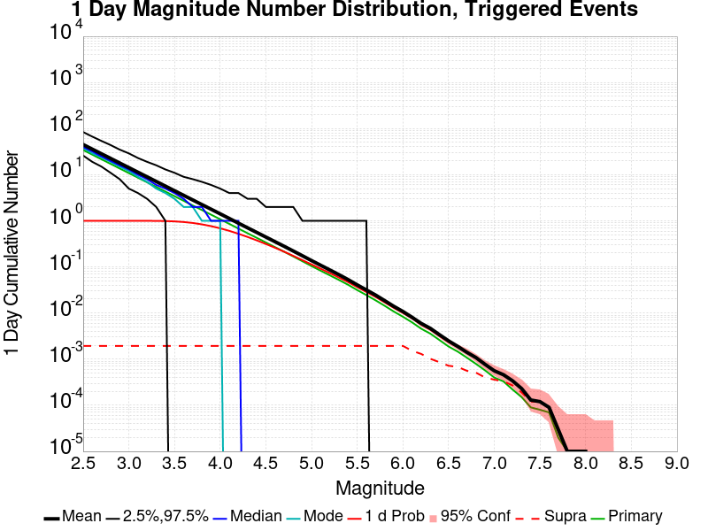
| Mag | Mean | 2.5 %ile | 97.5 %ile | Median | Mode | 1 d Probability | 1 d Supra-Seis Prob | Primary Aftershocks Mean |
|---|---|---|---|---|---|---|---|---|
| M≥2.5 | 45.046 | 26.000 | 84.000 | 40.000 | 38.000 | 1.000 (100.00%) | 1.94E-3 (0.19%) | 34.290 |
| M≥2.6 | 35.774 | 19.000 | 67.000 | 32.000 | 29.000 | 1.000 (100.00%) | 1.94E-3 (0.19%) | 27.236 |
| M≥2.7 | 28.419 | 15.000 | 54.000 | 25.000 | 24.000 | 1.000 (100.00%) | 1.94E-3 (0.19%) | 21.642 |
| M≥2.8 | 22.574 | 11.000 | 44.000 | 20.000 | 19.000 | 1.000 (100.00%) | 1.94E-3 (0.19%) | 17.188 |
| M≥2.9 | 17.922 | 8.000 | 35.000 | 16.000 | 15.000 | 1.000 (100.00%) | 1.94E-3 (0.19%) | 13.643 |
| M≥3 | 14.232 | 5.000 | 29.000 | 13.000 | 12.000 | 1.000 (100.00%) | 1.94E-3 (0.19%) | 10.836 |
| M≥3.1 | 11.302 | 4.000 | 23.000 | 10.000 | 9.000 | 1.000 (99.98%) | 1.94E-3 (0.19%) | 8.607 |
| M≥3.2 | 8.975 | 3.000 | 19.000 | 8.000 | 7.000 | 0.999 (99.90%) | 1.94E-3 (0.19%) | 6.834 |
| M≥3.3 | 7.127 | 2.000 | 16.000 | 6.000 | 5.000 | 0.996 (99.64%) | 1.94E-3 (0.19%) | 5.429 |
| M≥3.4 | 5.656 | 1.000 | 13.000 | 5.000 | 4.000 | 0.989 (98.87%) | 1.94E-3 (0.19%) | 4.310 |
| M≥3.5 | 4.492 | 0.000 | 11.000 | 4.000 | 3.000 | 0.973 (97.27%) | 1.94E-3 (0.19%) | 3.424 |
| M≥3.6 | 3.563 | 0.000 | 9.000 | 3.000 | 2.000 | 0.942 (94.23%) | 1.94E-3 (0.19%) | 2.716 |
| M≥3.7 | 2.829 | 0.000 | 8.000 | 2.000 | 2.000 | 0.898 (89.84%) | 1.94E-3 (0.19%) | 2.155 |
| M≥3.8 | 2.247 | 0.000 | 7.000 | 2.000 | 1.000 | 0.838 (83.78%) | 1.94E-3 (0.19%) | 1.711 |
| M≥3.9 | 1.785 | 0.000 | 6.000 | 1.000 | 1.000 | 0.767 (76.68%) | 1.94E-3 (0.19%) | 1.361 |
| M≥4 | 1.416 | 0.000 | 5.000 | 1.000 | 1.000 | 0.688 (68.79%) | 1.94E-3 (0.19%) | 1.080 |
| M≥4.1 | 1.123 | 0.000 | 4.000 | 1.000 | 0.000 | 0.605 (60.54%) | 1.94E-3 (0.19%) | 0.857 |
| M≥4.2 | 0.889 | 0.000 | 4.000 | 1.000 | 0.000 | 0.524 (52.35%) | 1.94E-3 (0.19%) | 0.679 |
| M≥4.3 | 0.704 | 0.000 | 3.000 | 0.000 | 0.000 | 0.447 (44.68%) | 1.94E-3 (0.19%) | 0.538 |
| M≥4.4 | 0.560 | 0.000 | 3.000 | 0.000 | 0.000 | 0.377 (37.71%) | 1.94E-3 (0.19%) | 0.428 |
| M≥4.5 | 0.444 | 0.000 | 2.000 | 0.000 | 0.000 | 0.314 (31.44%) | 1.94E-3 (0.19%) | 0.340 |
| M≥4.6 | 0.353 | 0.000 | 2.000 | 0.000 | 0.000 | 0.261 (26.07%) | 1.94E-3 (0.19%) | 0.269 |
| M≥4.7 | 0.280 | 0.000 | 2.000 | 0.000 | 0.000 | 0.214 (21.41%) | 1.94E-3 (0.19%) | 0.214 |
| M≥4.8 | 0.221 | 0.000 | 2.000 | 0.000 | 0.000 | 0.174 (17.39%) | 1.94E-3 (0.19%) | 0.169 |
| M≥4.9 | 0.175 | 0.000 | 1.000 | 0.000 | 0.000 | 0.140 (14.05%) | 1.94E-3 (0.19%) | 0.133 |
| M≥5 | 0.137 | 0.000 | 1.000 | 0.000 | 0.000 | 0.113 (11.33%) | 1.94E-3 (0.19%) | 0.104 |
| M≥5.1 | 0.109 | 0.000 | 1.000 | 0.000 | 0.000 | 0.091 (9.13%) | 1.94E-3 (0.19%) | 0.083 |
| M≥5.2 | 0.086 | 0.000 | 1.000 | 0.000 | 0.000 | 0.074 (7.36%) | 1.94E-3 (0.19%) | 0.066 |
| M≥5.3 | 0.068 | 0.000 | 1.000 | 0.000 | 0.000 | 0.059 (5.89%) | 1.94E-3 (0.19%) | 0.052 |
| M≥5.4 | 0.053 | 0.000 | 1.000 | 0.000 | 0.000 | 0.047 (4.68%) | 1.94E-3 (0.19%) | 0.041 |
| M≥5.5 | 0.041 | 0.000 | 1.000 | 0.000 | 0.000 | 0.036 (3.65%) | 1.94E-3 (0.19%) | 0.032 |
| M≥5.6 | 0.032 | 0.000 | 1.000 | 0.000 | 0.000 | 0.029 (2.87%) | 1.94E-3 (0.19%) | 0.025 |
| M≥5.7 | 0.025 | 0.000 | 0.000 | 0.000 | 0.000 | 0.022 (2.24%) | 1.94E-3 (0.19%) | 0.019 |
| M≥5.8 | 0.019 | 0.000 | 0.000 | 0.000 | 0.000 | 0.017 (1.71%) | 1.94E-3 (0.19%) | 0.014 |
| M≥5.9 | 0.014 | 0.000 | 0.000 | 0.000 | 0.000 | 0.013 (1.30%) | 1.94E-3 (0.19%) | 0.011 |
| M≥6 | 0.011 | 0.000 | 0.000 | 0.000 | 0.000 | 0.010 (1.01%) | 1.94E-3 (0.19%) | 8.32E-3 |
| M≥6.1 | 8.10E-3 | 0.000 | 0.000 | 0.000 | 0.000 | 7.68E-3 (0.77%) | 1.52E-3 (0.15%) | 6.29E-3 |
| M≥6.2 | 5.96E-3 | 0.000 | 0.000 | 0.000 | 0.000 | 5.64E-3 (0.56%) | 1.30E-3 (0.13%) | 4.58E-3 |
| M≥6.3 | 4.66E-3 | 0.000 | 0.000 | 0.000 | 0.000 | 4.39E-3 (0.44%) | 1.02E-3 (0.10%) | 3.58E-3 |
| M≥6.4 | 3.39E-3 | 0.000 | 0.000 | 0.000 | 0.000 | 3.20E-3 (0.32%) | 8.60E-4 (0.09%) | 2.60E-3 |
| M≥6.5 | 2.49E-3 | 0.000 | 0.000 | 0.000 | 0.000 | 2.35E-3 (0.24%) | 7.20E-4 (0.07%) | 1.88E-3 |
| M≥6.6 | 1.89E-3 | 0.000 | 0.000 | 0.000 | 0.000 | 1.84E-3 (0.18%) | 6.80E-4 (0.07%) | 1.46E-3 |
| M≥6.7 | 1.41E-3 | 0.000 | 0.000 | 0.000 | 0.000 | 1.39E-3 (0.14%) | 5.60E-4 (0.06%) | 1.08E-3 |
| M≥6.8 | 1.08E-3 | 0.000 | 0.000 | 0.000 | 0.000 | 1.07E-3 (0.11%) | 5.10E-4 (0.05%) | 7.90E-4 |
| M≥6.9 | 7.70E-4 | 0.000 | 0.000 | 0.000 | 0.000 | 7.70E-4 (0.08%) | 4.00E-4 (0.04%) | 5.70E-4 |
| M≥7 | 5.60E-4 | 0.000 | 0.000 | 0.000 | 0.000 | 5.60E-4 (0.06%) | 3.60E-4 (0.04%) | 4.00E-4 |
| M≥7.1 | 4.60E-4 | 0.000 | 0.000 | 0.000 | 0.000 | 4.60E-4 (0.05%) | 3.30E-4 (0.03%) | 3.30E-4 |
| M≥7.2 | 3.40E-4 | 0.000 | 0.000 | 0.000 | 0.000 | 3.40E-4 (0.03%) | 2.70E-4 (0.03%) | 2.20E-4 |
| M≥7.3 | 2.30E-4 | 0.000 | 0.000 | 0.000 | 0.000 | 2.30E-4 (0.02%) | 1.90E-4 (0.02%) | 1.50E-4 |
| M≥7.4 | 1.30E-4 | 0.000 | 0.000 | 0.000 | 0.000 | 1.30E-4 (0.01%) | 1.20E-4 (0.01%) | 9.00E-5 |
| M≥7.5 | 1.20E-4 | 0.000 | 0.000 | 0.000 | 0.000 | 1.20E-4 (0.01%) | 1.20E-4 (0.01%) | 8.00E-5 |
| M≥7.6 | 9.00E-5 | 0.000 | 0.000 | 0.000 | 0.000 | 9.00E-5 (0.01%) | 9.00E-5 (0.01%) | 7.00E-5 |
| M≥7.7 | 3.00E-5 | 0.000 | 0.000 | 0.000 | 0.000 | 3.00E-5 (0.00%) | 3.00E-5 (0.00%) | 2.00E-5 |
| M≥7.8 | 1.00E-5 | 0.000 | 0.000 | 0.000 | 0.000 | 1.00E-5 (0.00%) | 1.00E-5 (0.00%) | 1.00E-5 |
| M≥7.9 | 1.00E-5 | 0.000 | 0.000 | 0.000 | 0.000 | 1.00E-5 (0.00%) | 1.00E-5 (0.00%) | 1.00E-5 |
| M≥8 | 1.00E-5 | 0.000 | 0.000 | 0.000 | 0.000 | 1.00E-5 (0.00%) | 1.00E-5 (0.00%) | 1.00E-5 |
| M≥8.1 | 0.000 | 0.000 | 0.000 | 0.000 | 0.000 | 0.000 (0.00%) | 0.000 (0.00%) | 0.000 |
| M≥8.2 | 0.000 | 0.000 | 0.000 | 0.000 | 0.000 | 0.000 (0.00%) | 0.000 (0.00%) | 0.000 |
| M≥8.3 | 0.000 | 0.000 | 0.000 | 0.000 | 0.000 | 0.000 (0.00%) | 0.000 (0.00%) | 0.000 |
| M≥8.4 | 0.000 | 0.000 | 0.000 | 0.000 | 0.000 | 0.000 (0.00%) | 0.000 (0.00%) | 0.000 |
| M≥8.5 | 0.000 | 0.000 | 0.000 | 0.000 | 0.000 | 0.000 (0.00%) | 0.000 (0.00%) | 0.000 |
| M≥8.6 | 0.000 | 0.000 | 0.000 | 0.000 | 0.000 | 0.000 (0.00%) | 0.000 (0.00%) | 0.000 |
| M≥8.7 | 0.000 | 0.000 | 0.000 | 0.000 | 0.000 | 0.000 (0.00%) | 0.000 (0.00%) | 0.000 |
| M≥8.8 | 0.000 | 0.000 | 0.000 | 0.000 | 0.000 | 0.000 (0.00%) | 0.000 (0.00%) | 0.000 |
| M≥8.9 | 0.000 | 0.000 | 0.000 | 0.000 | 0.000 | 0.000 (0.00%) | 0.000 (0.00%) | 0.000 |
| M≥9 | 0.000 | 0.000 | 0.000 | 0.000 | 0.000 | 0.000 (0.00%) | 0.000 (0.00%) | 0.000 |
Legend
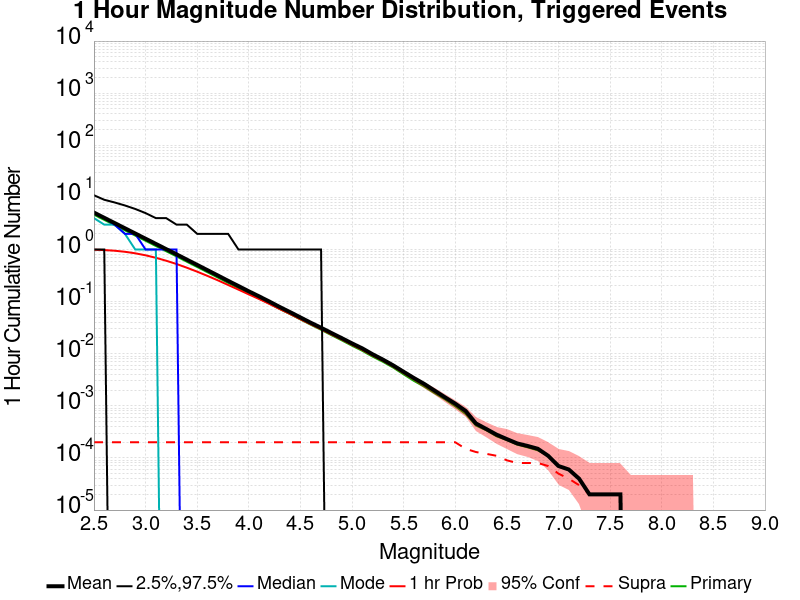
| Mag | Mean | 2.5 %ile | 97.5 %ile | Median | Mode | 1 hr Probability | 1 hr Supra-Seis Prob | Primary Aftershocks Mean |
|---|---|---|---|---|---|---|---|---|
| M≥2.5 | 5.111 | 1.000 | 11.000 | 5.000 | 4.000 | 0.991 (99.07%) | 2.00E-4 (0.02%) | 4.661 |
| M≥2.6 | 4.057 | 1.000 | 9.000 | 4.000 | 3.000 | 0.976 (97.62%) | 2.00E-4 (0.02%) | 3.700 |
| M≥2.7 | 3.221 | 0.000 | 8.000 | 3.000 | 3.000 | 0.948 (94.82%) | 2.00E-4 (0.02%) | 2.938 |
| M≥2.8 | 2.558 | 0.000 | 7.000 | 2.000 | 2.000 | 0.904 (90.44%) | 2.00E-4 (0.02%) | 2.332 |
| M≥2.9 | 2.029 | 0.000 | 6.000 | 2.000 | 1.000 | 0.846 (84.59%) | 2.00E-4 (0.02%) | 1.851 |
| M≥3 | 1.612 | 0.000 | 5.000 | 1.000 | 1.000 | 0.774 (77.39%) | 2.00E-4 (0.02%) | 1.470 |
| M≥3.1 | 1.281 | 0.000 | 4.000 | 1.000 | 1.000 | 0.694 (69.38%) | 2.00E-4 (0.02%) | 1.168 |
| M≥3.2 | 1.016 | 0.000 | 4.000 | 1.000 | 0.000 | 0.609 (60.89%) | 2.00E-4 (0.02%) | 0.927 |
| M≥3.3 | 0.808 | 0.000 | 3.000 | 1.000 | 0.000 | 0.527 (52.70%) | 2.00E-4 (0.02%) | 0.737 |
| M≥3.4 | 0.639 | 0.000 | 3.000 | 0.000 | 0.000 | 0.447 (44.74%) | 2.00E-4 (0.02%) | 0.583 |
| M≥3.5 | 0.507 | 0.000 | 2.000 | 0.000 | 0.000 | 0.376 (37.55%) | 2.00E-4 (0.02%) | 0.462 |
| M≥3.6 | 0.401 | 0.000 | 2.000 | 0.000 | 0.000 | 0.311 (31.13%) | 2.00E-4 (0.02%) | 0.366 |
| M≥3.7 | 0.318 | 0.000 | 2.000 | 0.000 | 0.000 | 0.256 (25.65%) | 2.00E-4 (0.02%) | 0.290 |
| M≥3.8 | 0.251 | 0.000 | 2.000 | 0.000 | 0.000 | 0.209 (20.87%) | 2.00E-4 (0.02%) | 0.229 |
| M≥3.9 | 0.199 | 0.000 | 1.000 | 0.000 | 0.000 | 0.170 (16.99%) | 2.00E-4 (0.02%) | 0.182 |
| M≥4 | 0.158 | 0.000 | 1.000 | 0.000 | 0.000 | 0.138 (13.77%) | 2.00E-4 (0.02%) | 0.144 |
| M≥4.1 | 0.126 | 0.000 | 1.000 | 0.000 | 0.000 | 0.112 (11.21%) | 2.00E-4 (0.02%) | 0.115 |
| M≥4.2 | 0.100 | 0.000 | 1.000 | 0.000 | 0.000 | 0.090 (9.03%) | 2.00E-4 (0.02%) | 0.092 |
| M≥4.3 | 0.079 | 0.000 | 1.000 | 0.000 | 0.000 | 0.072 (7.20%) | 2.00E-4 (0.02%) | 0.072 |
| M≥4.4 | 0.063 | 0.000 | 1.000 | 0.000 | 0.000 | 0.058 (5.80%) | 2.00E-4 (0.02%) | 0.058 |
| M≥4.5 | 0.050 | 0.000 | 1.000 | 0.000 | 0.000 | 0.046 (4.61%) | 2.00E-4 (0.02%) | 0.046 |
| M≥4.6 | 0.039 | 0.000 | 1.000 | 0.000 | 0.000 | 0.037 (3.68%) | 2.00E-4 (0.02%) | 0.036 |
| M≥4.7 | 0.032 | 0.000 | 1.000 | 0.000 | 0.000 | 0.030 (2.96%) | 2.00E-4 (0.02%) | 0.029 |
| M≥4.8 | 0.025 | 0.000 | 0.000 | 0.000 | 0.000 | 0.023 (2.35%) | 2.00E-4 (0.02%) | 0.023 |
| M≥4.9 | 0.020 | 0.000 | 0.000 | 0.000 | 0.000 | 0.019 (1.88%) | 2.00E-4 (0.02%) | 0.018 |
| M≥5 | 0.016 | 0.000 | 0.000 | 0.000 | 0.000 | 0.015 (1.49%) | 2.00E-4 (0.02%) | 0.014 |
| M≥5.1 | 0.013 | 0.000 | 0.000 | 0.000 | 0.000 | 0.012 (1.19%) | 2.00E-4 (0.02%) | 0.011 |
| M≥5.2 | 9.75E-3 | 0.000 | 0.000 | 0.000 | 0.000 | 9.25E-3 (0.92%) | 2.00E-4 (0.02%) | 8.78E-3 |
| M≥5.3 | 7.70E-3 | 0.000 | 0.000 | 0.000 | 0.000 | 7.36E-3 (0.74%) | 2.00E-4 (0.02%) | 6.99E-3 |
| M≥5.4 | 5.96E-3 | 0.000 | 0.000 | 0.000 | 0.000 | 5.75E-3 (0.57%) | 2.00E-4 (0.02%) | 5.41E-3 |
| M≥5.5 | 4.50E-3 | 0.000 | 0.000 | 0.000 | 0.000 | 4.33E-3 (0.43%) | 2.00E-4 (0.02%) | 4.02E-3 |
| M≥5.6 | 3.41E-3 | 0.000 | 0.000 | 0.000 | 0.000 | 3.29E-3 (0.33%) | 2.00E-4 (0.02%) | 3.01E-3 |
| M≥5.7 | 2.63E-3 | 0.000 | 0.000 | 0.000 | 0.000 | 2.54E-3 (0.25%) | 2.00E-4 (0.02%) | 2.34E-3 |
| M≥5.8 | 1.96E-3 | 0.000 | 0.000 | 0.000 | 0.000 | 1.88E-3 (0.19%) | 2.00E-4 (0.02%) | 1.75E-3 |
| M≥5.9 | 1.46E-3 | 0.000 | 0.000 | 0.000 | 0.000 | 1.42E-3 (0.14%) | 2.00E-4 (0.02%) | 1.33E-3 |
| M≥6 | 1.10E-3 | 0.000 | 0.000 | 0.000 | 0.000 | 1.06E-3 (0.11%) | 2.00E-4 (0.02%) | 9.80E-4 |
| M≥6.1 | 8.00E-4 | 0.000 | 0.000 | 0.000 | 0.000 | 7.70E-4 (0.08%) | 1.50E-4 (0.01%) | 7.00E-4 |
| M≥6.2 | 4.60E-4 | 0.000 | 0.000 | 0.000 | 0.000 | 4.50E-4 (0.04%) | 1.30E-4 (0.01%) | 4.20E-4 |
| M≥6.3 | 3.60E-4 | 0.000 | 0.000 | 0.000 | 0.000 | 3.50E-4 (0.03%) | 1.20E-4 (0.01%) | 3.40E-4 |
| M≥6.4 | 2.80E-4 | 0.000 | 0.000 | 0.000 | 0.000 | 2.70E-4 (0.03%) | 1.10E-4 (0.01%) | 2.60E-4 |
| M≥6.5 | 2.30E-4 | 0.000 | 0.000 | 0.000 | 0.000 | 2.30E-4 (0.02%) | 9.00E-5 (0.01%) | 2.20E-4 |
| M≥6.6 | 1.90E-4 | 0.000 | 0.000 | 0.000 | 0.000 | 1.90E-4 (0.02%) | 8.00E-5 (0.01%) | 1.80E-4 |
| M≥6.7 | 1.70E-4 | 0.000 | 0.000 | 0.000 | 0.000 | 1.70E-4 (0.02%) | 8.00E-5 (0.01%) | 1.60E-4 |
| M≥6.8 | 1.50E-4 | 0.000 | 0.000 | 0.000 | 0.000 | 1.50E-4 (0.01%) | 8.00E-5 (0.01%) | 1.40E-4 |
| M≥6.9 | 1.10E-4 | 0.000 | 0.000 | 0.000 | 0.000 | 1.10E-4 (0.01%) | 7.00E-5 (0.01%) | 1.10E-4 |
| M≥7 | 7.00E-5 | 0.000 | 0.000 | 0.000 | 0.000 | 7.00E-5 (0.01%) | 5.00E-5 (0.01%) | 7.00E-5 |
| M≥7.1 | 6.00E-5 | 0.000 | 0.000 | 0.000 | 0.000 | 6.00E-5 (0.01%) | 4.00E-5 (0.00%) | 6.00E-5 |
| M≥7.2 | 4.00E-5 | 0.000 | 0.000 | 0.000 | 0.000 | 4.00E-5 (0.00%) | 3.00E-5 (0.00%) | 4.00E-5 |
| M≥7.3 | 2.00E-5 | 0.000 | 0.000 | 0.000 | 0.000 | 2.00E-5 (0.00%) | 2.00E-5 (0.00%) | 2.00E-5 |
| M≥7.4 | 2.00E-5 | 0.000 | 0.000 | 0.000 | 0.000 | 2.00E-5 (0.00%) | 2.00E-5 (0.00%) | 2.00E-5 |
| M≥7.5 | 2.00E-5 | 0.000 | 0.000 | 0.000 | 0.000 | 2.00E-5 (0.00%) | 2.00E-5 (0.00%) | 2.00E-5 |
| M≥7.6 | 2.00E-5 | 0.000 | 0.000 | 0.000 | 0.000 | 2.00E-5 (0.00%) | 2.00E-5 (0.00%) | 2.00E-5 |
| M≥7.7 | 0.000 | 0.000 | 0.000 | 0.000 | 0.000 | 0.000 (0.00%) | 0.000 (0.00%) | 0.000 |
| M≥7.8 | 0.000 | 0.000 | 0.000 | 0.000 | 0.000 | 0.000 (0.00%) | 0.000 (0.00%) | 0.000 |
| M≥7.9 | 0.000 | 0.000 | 0.000 | 0.000 | 0.000 | 0.000 (0.00%) | 0.000 (0.00%) | 0.000 |
| M≥8 | 0.000 | 0.000 | 0.000 | 0.000 | 0.000 | 0.000 (0.00%) | 0.000 (0.00%) | 0.000 |
| M≥8.1 | 0.000 | 0.000 | 0.000 | 0.000 | 0.000 | 0.000 (0.00%) | 0.000 (0.00%) | 0.000 |
| M≥8.2 | 0.000 | 0.000 | 0.000 | 0.000 | 0.000 | 0.000 (0.00%) | 0.000 (0.00%) | 0.000 |
| M≥8.3 | 0.000 | 0.000 | 0.000 | 0.000 | 0.000 | 0.000 (0.00%) | 0.000 (0.00%) | 0.000 |
| M≥8.4 | 0.000 | 0.000 | 0.000 | 0.000 | 0.000 | 0.000 (0.00%) | 0.000 (0.00%) | 0.000 |
| M≥8.5 | 0.000 | 0.000 | 0.000 | 0.000 | 0.000 | 0.000 (0.00%) | 0.000 (0.00%) | 0.000 |
| M≥8.6 | 0.000 | 0.000 | 0.000 | 0.000 | 0.000 | 0.000 (0.00%) | 0.000 (0.00%) | 0.000 |
| M≥8.7 | 0.000 | 0.000 | 0.000 | 0.000 | 0.000 | 0.000 (0.00%) | 0.000 (0.00%) | 0.000 |
| M≥8.8 | 0.000 | 0.000 | 0.000 | 0.000 | 0.000 | 0.000 (0.00%) | 0.000 (0.00%) | 0.000 |
| M≥8.9 | 0.000 | 0.000 | 0.000 | 0.000 | 0.000 | 0.000 (0.00%) | 0.000 (0.00%) | 0.000 |
| M≥9 | 0.000 | 0.000 | 0.000 | 0.000 | 0.000 | 0.000 (0.00%) | 0.000 (0.00%) | 0.000 |
These plots show how the probability of ruptures of various magnitudes within 100km of any scenario rupture changes over time
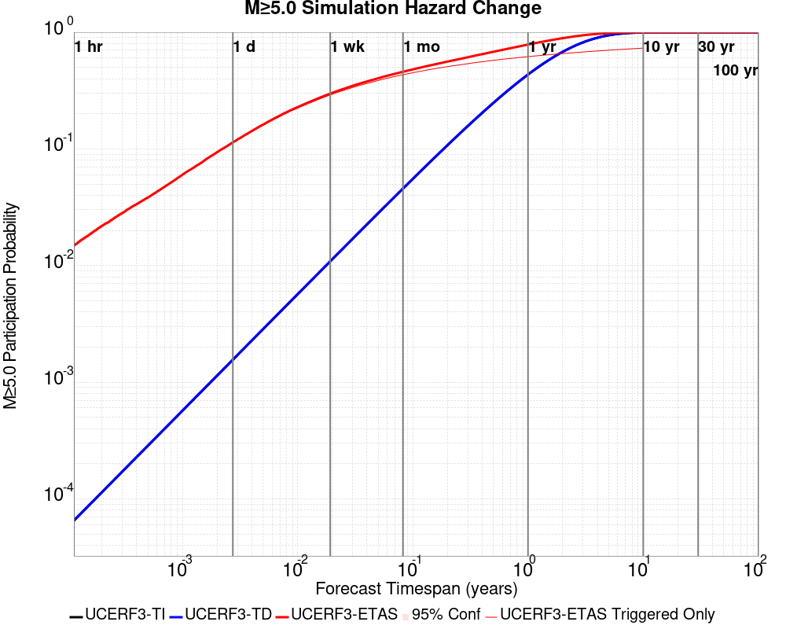
| Forecast Duration | UCERF3-ETAS [95% Conf] | UCERF3-ETAS Triggered Only | UCERF3-TD | UCERF3-ETAS/TD Gain | UCERF3-TI |
|---|---|---|---|---|---|
| 1 Hour | 0.015 [0.014 - 0.016] | 0.015 | 6.53E-5 | 227.79 | 6.48E-5 |
| 1 Day | 0.114 [0.112 - 0.116] | 0.112 | 1.56E-3 | 72.68 | 1.55E-3 |
| 1 Week | 0.298 [0.295 - 0.300] | 0.290 | 0.011 | 27.29 | 0.011 |
| 1 Month | 0.459 [0.456 - 0.462] | 0.433 | 0.046 | 10 | 0.046 |
| 1 Year | 0.785 [0.783 - 0.786] | 0.618 | 0.436 | 1.8 | 0.433 |
| 10 Years | 0.999 [0.999 - 0.999] | 0.731 | 0.997 | 1 | 0.997 |
| 30 Years | 1.000 [1.000 - 1.000] * | * | 1.000 | 1 * | 1.000 |
| 100 Years | 1.000 [1.000 - 1.000] * | * | 1.000 | 1 * | 1.000 |
* forecast duration is longer than simulation length, only ETAS ruptures from the first 10 years are included

| Forecast Duration | UCERF3-ETAS [95% Conf] | UCERF3-ETAS Triggered Only | UCERF3-TD | UCERF3-ETAS/TD Gain | UCERF3-TI |
|---|---|---|---|---|---|
| 1 Hour | 1.05E-3 [8.61E-4 - 1.27E-3] | 1.04E-3 | 7.23E-6 | 144.94 | 6.76E-6 |
| 1 Day | 0.010 [9.55E-3 - 0.011] | 9.98E-3 | 1.73E-4 | 58.55 | 1.62E-4 |
| 1 Week | 0.032 [0.031 - 0.033] | 0.031 | 1.21E-3 | 26.13 | 1.13E-3 |
| 1 Month | 0.057 [0.055 - 0.058] | 0.052 | 5.19E-3 | 10.9 | 4.85E-3 |
| 1 Year | 0.145 [0.143 - 0.147] | 0.089 | 0.061 | 2.36 | 0.058 |
| 10 Years | 0.536 [0.534 - 0.537] | 0.125 | 0.469 | 1.14 | 0.447 |
| 30 Years | 0.870 [0.870 - 0.870] * | * | 0.852 | 1.02 * | 0.831 |
| 100 Years | 0.999 [0.999 - 0.999] * | * | 0.998 | 1 * | 0.997 |
* forecast duration is longer than simulation length, only ETAS ruptures from the first 10 years are included

| Forecast Duration | UCERF3-ETAS [95% Conf] | UCERF3-ETAS Triggered Only | UCERF3-TD | UCERF3-ETAS/TD Gain | UCERF3-TI |
|---|---|---|---|---|---|
| 1 Hour | 7.07E-5 [3.14E-5 - 1.52E-4] | 7.00E-5 | 6.89E-7 | 102.54 | 6.22E-7 |
| 1 Day | 5.47E-4 [4.17E-4 - 7.15E-4] | 5.30E-4 | 1.65E-5 | 33.03 | 1.49E-5 |
| 1 Week | 1.85E-3 [1.60E-3 - 2.13E-3] | 1.73E-3 | 1.16E-4 | 15.94 | 1.05E-4 |
| 1 Month | 3.30E-3 [2.99E-3 - 3.66E-3] | 2.81E-3 | 4.96E-4 | 6.66 | 4.48E-4 |
| 1 Year | 0.012 [0.011 - 0.012] | 5.52E-3 | 6.03E-3 | 1.91 | 5.44E-3 |
| 10 Years | 0.067 [0.066 - 0.068] | 8.74E-3 | 0.059 | 1.14 | 0.053 |
| 30 Years | 0.175 [0.175 - 0.176] * | * | 0.168 | 1.04 * | 0.151 |
| 100 Years | 0.477 [0.477 - 0.477] * | * | 0.472 | 1.01 * | 0.421 |
* forecast duration is longer than simulation length, only ETAS ruptures from the first 10 years are included
| Forecast Duration | UCERF3-ETAS [95% Conf] | UCERF3-ETAS Triggered Only | UCERF3-TD | UCERF3-ETAS/TD Gain | UCERF3-TI |
|---|---|---|---|---|---|
| 1 Hour | 1.24E-8 [1.24E-8 - 4.79E-5] | 0.000 | 1.24E-8 | 1 | 1.06E-8 |
| 1 Day | 1.03E-5 [8.19E-7 - 6.52E-5] | 1.00E-5 | 2.97E-7 | 34.69 | 2.54E-7 |
| 1 Week | 2.21E-5 [5.54E-6 - 8.27E-5] | 2.00E-5 | 2.08E-6 | 10.63 | 1.78E-6 |
| 1 Month | 2.89E-5 [1.24E-5 - 8.96E-5] | 2.00E-5 | 8.90E-6 | 3.25 | 7.63E-6 |
| 1 Year | 1.28E-4 [1.12E-4 - 1.89E-4] | 2.00E-5 | 1.08E-4 | 1.18 | 9.29E-5 |
| 10 Years | 1.13E-3 [1.10E-3 - 1.19E-3] | 3.00E-5 | 1.10E-3 | 1.03 | 9.29E-4 |
| 30 Years | 3.53E-3 [3.51E-3 - 3.60E-3] * | * | 3.50E-3 | 1.01 * | 2.78E-3 |
| 100 Years | 0.014 [0.014 - 0.014] * | * | 0.014 | 1 * | 9.25E-3 |
* forecast duration is longer than simulation length, only ETAS ruptures from the first 10 years are included

| Section Name | Strike, Dip, Rake | # Hypos In Poly | Max Mag w/ Hypo In Poly | # Surfs In Poly | Max Mag w/ Surf In Poly | Min Dist To Any (km) | Min Poly Dist To Any (km) | Min Dist To Largest (km) | Min Poly Dist To Largest (km) | Min Hypo Dist To Largest (km) | Min Hypo Poly Dist To Largest (km) |
|---|---|---|---|---|---|---|---|---|---|---|---|
| Airport Lake | 358, 50, -90 | 87 | 5.36 | 87 | 5.36 | 6.631 | 0.000 | 13.299 | 1.599 | 12.221 | 2.716 |
| Little Lake | 327, 90, 180 | 15 | 3.75 | 15 | 3.75 | 2.268 | 0.000 | 5.149 | 1.410 | 16.936 | 4.928 |
| Garlock (Central) | 69, 90, 0 | 2 | 2.76 | 2 | 2.76 | 11.323 | 0.000 | 14.413 | 2.407 | 22.766 | 10.797 |
| Tank Canyon | 189, 50, -90 | 0 | 0 | 10.848 | 10.827 | 16.989 | 16.985 | 17.039 | 16.895 | ||
| So Sierra Nevada | 5, 50, -90 | 0 | 0 | 13.109 | 12.687 | 15.988 | 15.982 | 22.039 | 21.742 |
These are map plots of individual catalogs from the simulations, selected as the closest catalog to each of the given percentiles in terms of total number of events.
| Duration | p0.0 %-ile | p25.0 %-ile | p50.0 %-ile | p75.0 %-ile | p90.0 %-ile | p95.0 %-ile | p97.5 %-ile | p98.0 %-ile | p99.0 %-ile | p99.5 %-ile | p99.9 %-ile | p100.0 %-ile |
|---|---|---|---|---|---|---|---|---|---|---|---|---|
| 1 Week |  |  |  |  |  |  | ||||||
| 1 Month |  |  |  |  |  |  | ||||||
| 1 Year |  |  |  |  |  |  |  |  | ||||
| 10 Year |  |  |  |  |
These plots compare simulated sequences with data from ComCat. All plots only consider events with hypocenters inside the ComCat region defined in the JSON input file.
Last updated at 2020/02/09 06:33:29 UTC, 218.1 days after the simulation start time.
Total matching ComCat events found: 841
| Incremental MND | Cumulative MND |
|---|---|
| 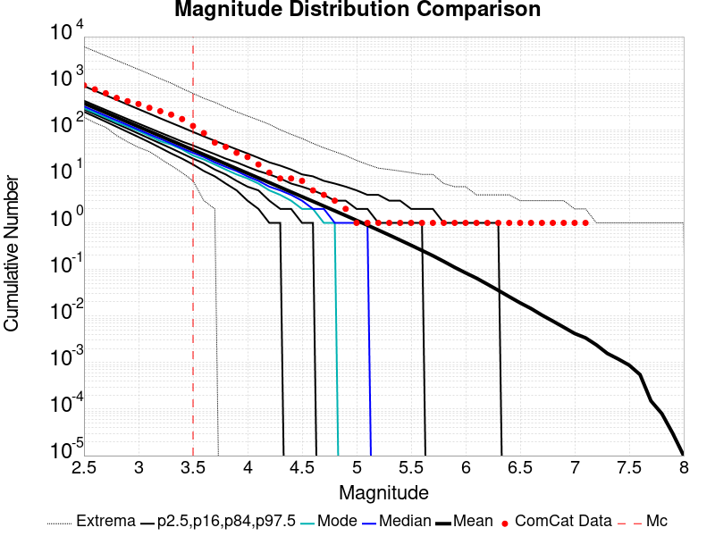 |
The following plots compare simulation results with ComCat data above a magnitude threshold. Plots labeled as M≥Mc(t) use the time-dependent magnitude of completeness (Mc) defined in Helmstetter et al. (2006), which is plotted below. In the case of multiple M≥5 ruptures, either as input to the simulation or in the comparison data, the maximum calculated time-dependent Mc is used. This time-dependent Mc function is plotted below.
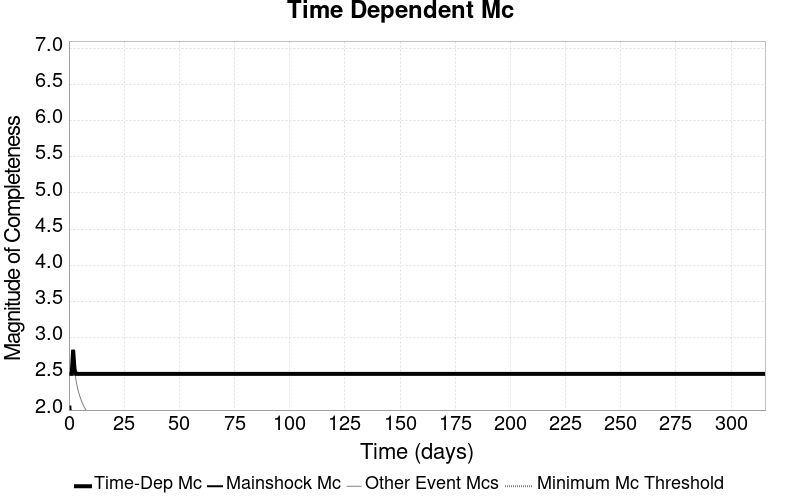
| M≥Mc(t) | M≥3.5 | M≥4 | M≥5 | M≥6 | M≥7 | M≥8 |
|---|---|---|---|---|---|---|
 |  |  |  | 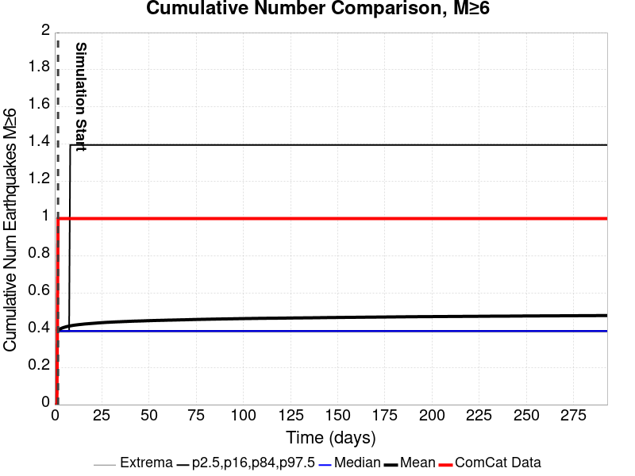 | 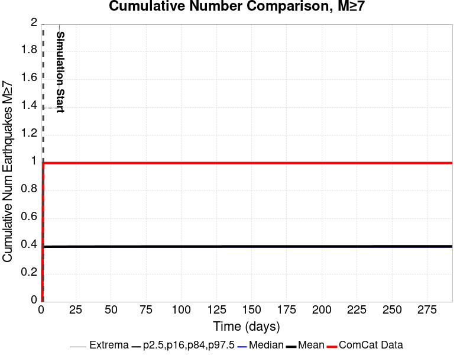 |  |
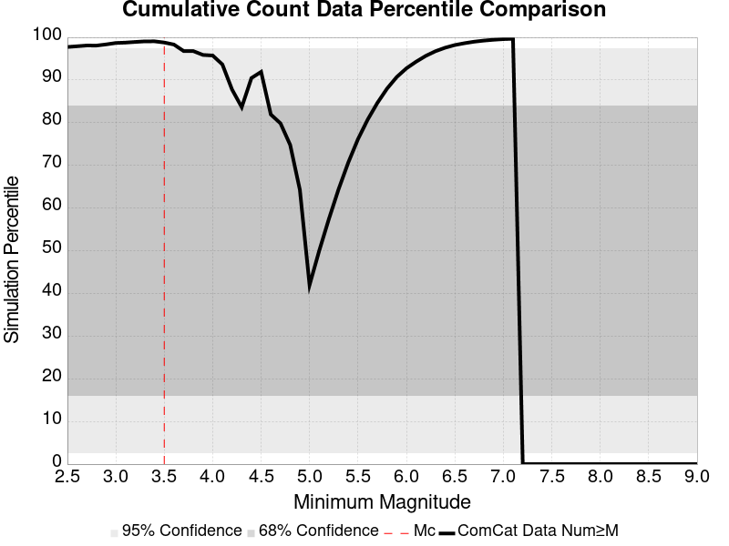
Note: maps labeled 'Forecast' are for a duration that extends into the future, only forecasted values are plotted (ComCat data omitted)
| 1 Day | 1 Week | 1 Month | Current (218.1 Day) | Forecast: 1 Year | |
|---|---|---|---|---|---|
| M≥Mc(t) |  |  | |||
| Prob: 100.00%, Actual: 117 | Prob: 100.00%, Actual: 299 | Prob: 100.00%, Actual: 441 | Prob: 100.00%, Actual: 592 | Prob: 100.00% | |
| M≥3.5 |  |  | |||
| Prob: 96.68%, Actual: 69 | Prob: 99.99%, Actual: 84 | Prob: 100.00%, Actual: 96 | Prob: 100.00%, Actual: 112 | Prob: 100.00% | |
| M≥4 |  |  | |||
| Prob: 66.59%, Actual: 20 | Prob: 95.10%, Actual: 23 | Prob: 99.23%, Actual: 24 | Prob: 99.94%, Actual: 24 | Prob: 99.97% | |
| M≥5 |  | 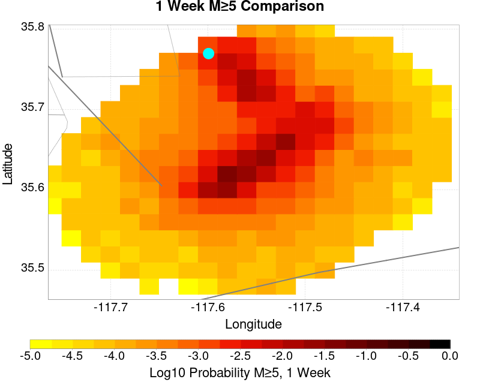 |  |  | |
| Prob: 10.58%, Actual: 1 | Prob: 27.42%, Actual: 1 | Prob: 41.15%, Actual: 1 | Prob: 56.10%, Actual: 1 | Prob: 59.26% | |
| M≥6 |  |  |  | ||
| Prob: 0.85%, Actual: 1 | Prob: 2.59%, Actual: 1 | Prob: 4.40%, Actual: 1 | Prob: 6.89%, Actual: 1 | Prob: 7.52% | |
| M≥7 | 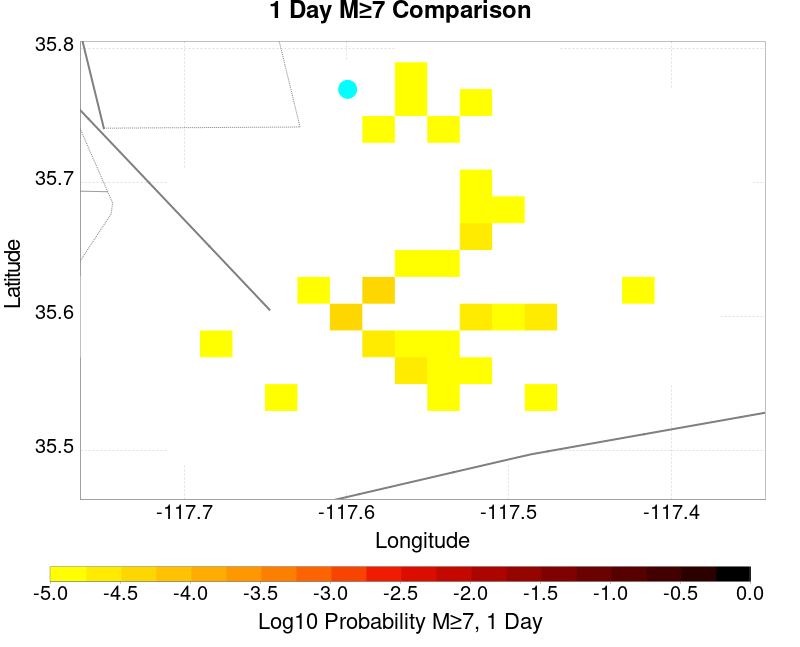 |  |  |  | 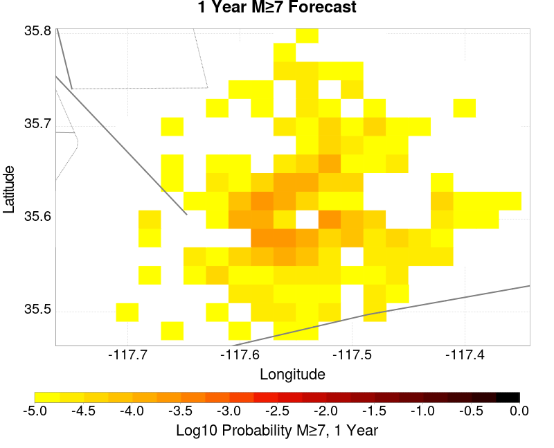 |
| Prob: 0.04%, Actual: 1 | Prob: 0.13%, Actual: 1 | Prob: 0.21%, Actual: 1 | Prob: 0.38%, Actual: 1 | Prob: 0.43% | |
| M≥8 |  |  |  |  | |
| Prob: 0.00%, Actual: 0 | Prob: 0.00%, Actual: 0 | Prob: 0.00%, Actual: 0 | Prob: 0.00%, Actual: 0 | Prob: 0.00% |
Note: maps labeled 'Forecast' are for a duration that extends into the future, only forecasted values are plotted (ComCat data omitted)
| 1 Day | 1 Week | 1 Month | Current (218.1 Day) | Forecast: 1 Year | |
|---|---|---|---|---|---|
| M≥Mc(t) |  |  |  | ||
| Mean: 15.677, Actual: 117 | Mean: 95.793, Actual: 299 | Mean: 183.123, Actual: 441 | Mean: 317.029, Actual: 592 | Mean: 353.291 | |
| M≥3.5 |  |  |  | ||
| Mean: 4.063, Actual: 69 | Mean: 12.165, Actual: 84 | Mean: 20.887, Actual: 96 | Mean: 34.251, Actual: 112 | Mean: 37.873 | |
| M≥4 |  | ||||
| Mean: 1.281, Actual: 20 | Mean: 3.834, Actual: 23 | Mean: 6.580, Actual: 24 | Mean: 10.805, Actual: 24 | Mean: 11.948 | |
| M≥5 |  | 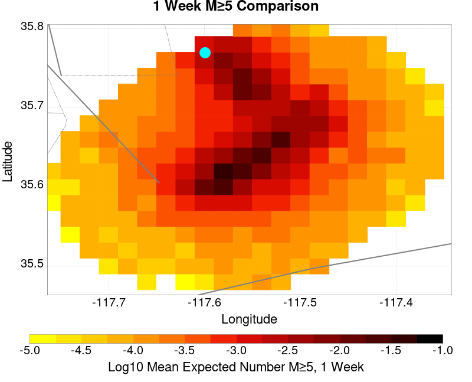 |  |  | |
| Mean: 0.123, Actual: 1 | Mean: 0.373, Actual: 1 | Mean: 0.642, Actual: 1 | Mean: 1.051, Actual: 1 | Mean: 1.162 | |
| M≥6 | 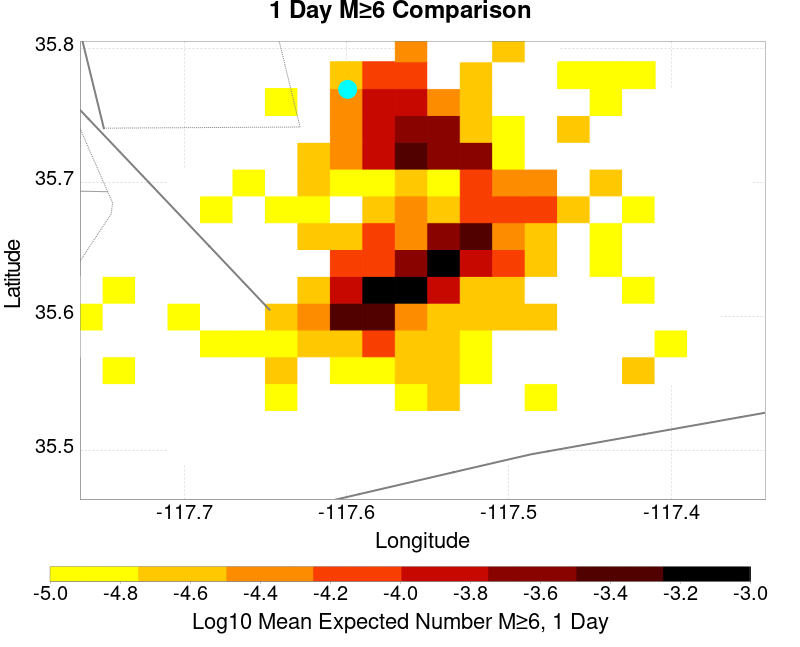 |  | 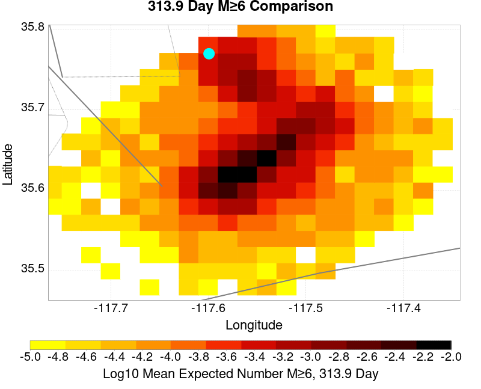 |  | |
| Mean: 8.81E-3, Actual: 1 | Mean: 0.028, Actual: 1 | Mean: 0.048, Actual: 1 | Mean: 0.079, Actual: 1 | Mean: 0.086 | |
| M≥7 |  |  |  |  |  |
| Mean: 4.00E-4, Actual: 1 | Mean: 1.32E-3, Actual: 1 | Mean: 2.14E-3, Actual: 1 | Mean: 3.80E-3, Actual: 1 | Mean: 4.35E-3 | |
| M≥8 |  | 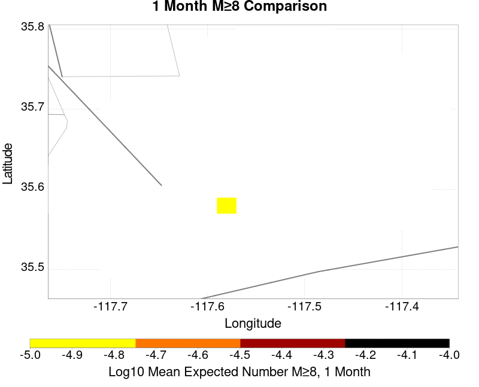 | |||
| Mean: 0.000, Actual: 0 | Mean: 1.00E-5, Actual: 0 | Mean: 1.00E-5, Actual: 0 | Mean: 1.00E-5, Actual: 0 | Mean: 1.00E-5 |
| M≥Mc(t) | M≥3.5 | M≥4 | M≥5 | M≥6 | M≥7 | M≥8 |
|---|---|---|---|---|---|---|
| 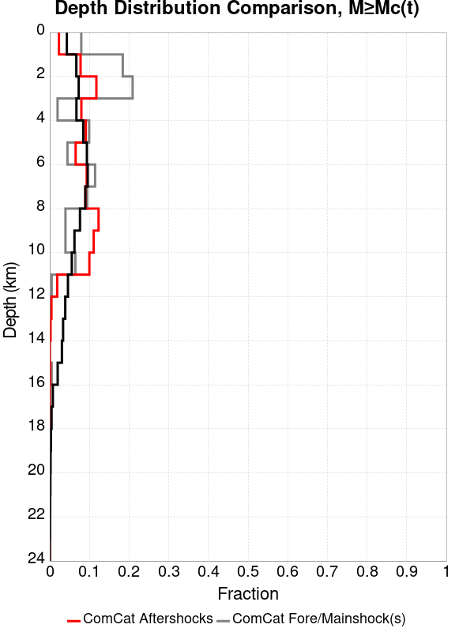 |  | 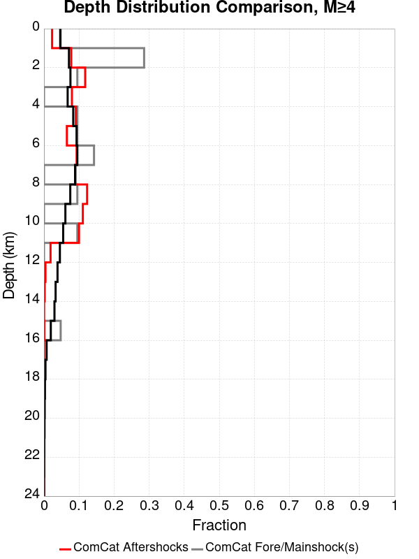 |  |  | 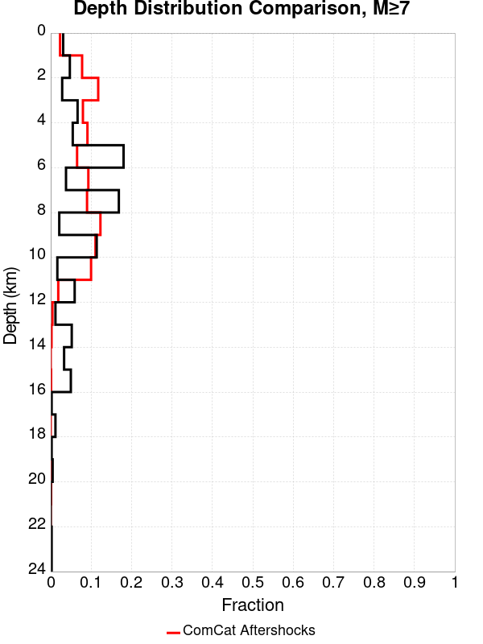 |  |
| Min Mag | 1 yr Triggered Ruptures (no spontaneous) | 10 yr Triggered Ruptures (no spontaneous) | 10 yr Triggered Ruptures (primary aftershocks only) |
|---|---|---|---|
| All Supra. Seis. |  |  | |
| M≥6.5 |  | 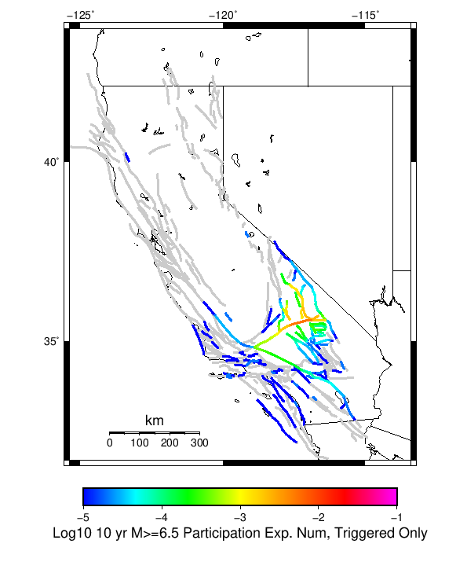 | 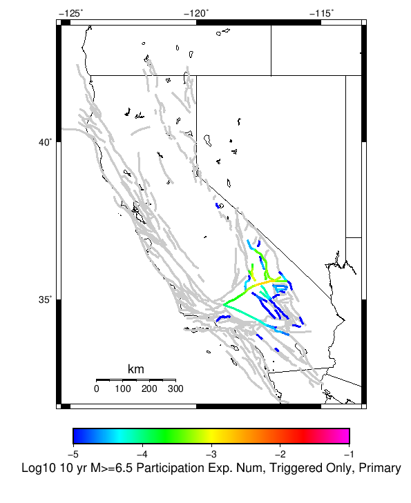 |
| M≥7 |  |  |  |
| M≥7.5 |  | 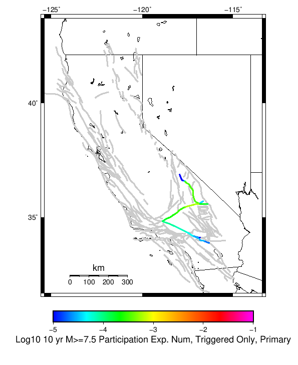 | |
| M≥8 |  |  |  |
First 10 of 122 with matching ruptures shown
| Parent Name | Triggered 10 Year Mean Count | Triggered 1 Day Prob | Triggered 1 Week Prob | Triggered 1 Month Prob | Triggered 1 Year Prob | Triggered 10 Year Prob | Triggered 10 Year Primary Mean Count |
|---|---|---|---|---|---|---|---|
| Tank Canyon | 0.01435 | 6.9E-4 | 0.00196 | 0.00369 | 0.00773 | 0.01236 | 0.00359 |
| Garlock (Central) | 0.01109 | 5.2E-4 | 0.00184 | 0.00327 | 0.00668 | 0.01076 | 0.0034 |
| Owl Lake | 0.00481 | 1.9E-4 | 6.7E-4 | 0.00116 | 0.00242 | 0.00418 | 8.2E-4 |
| Little Lake | 0.00457 | 3.0E-4 | 9.5E-4 | 0.00162 | 0.00308 | 0.00454 | 0.00183 |
| Panamint Valley | 0.00345 | 1.2E-4 | 4.3E-4 | 9.3E-4 | 0.00206 | 0.00337 | 6.9E-4 |
| Garlock (East) | 0.0029 | 1.1E-4 | 4.4E-4 | 7.7E-4 | 0.00152 | 0.0026 | 4.6E-4 |
| Airport Lake | 0.00214 | 2.1E-4 | 5.7E-4 | 9.0E-4 | 0.00155 | 0.00214 | 0.0011 |
| Blackwater | 0.00185 | 8.0E-5 | 2.7E-4 | 5.1E-4 | 0.00107 | 0.00177 | 4.4E-4 |
| Gravel Hills-Harper Lk | 0.00143 | 4.0E-5 | 2.3E-4 | 3.7E-4 | 7.1E-4 | 0.00135 | 3.0E-4 |
| Hunter Mountain-Saline Valley | 0.00142 | 7.0E-5 | 2.3E-4 | 4.4E-4 | 8.3E-4 | 0.00138 | 3.6E-4 |
First 10 of 101 with matching ruptures shown
| Parent Name | Triggered 10 Year Mean Count | Triggered 1 Day Prob | Triggered 1 Week Prob | Triggered 1 Month Prob | Triggered 1 Year Prob | Triggered 10 Year Prob | Triggered 10 Year Primary Mean Count |
|---|---|---|---|---|---|---|---|
| Garlock (Central) | 0.00592 | 3.2E-4 | 0.00109 | 0.00179 | 0.0036 | 0.00582 | 0.00173 |
| Panamint Valley | 0.00324 | 1.2E-4 | 4.3E-4 | 9.0E-4 | 0.00192 | 0.00316 | 6.9E-4 |
| Owl Lake | 0.0024 | 1.6E-4 | 4.2E-4 | 7.0E-4 | 0.00143 | 0.00238 | 6.8E-4 |
| Garlock (East) | 0.00208 | 9.0E-5 | 3.7E-4 | 6.4E-4 | 0.00115 | 0.00197 | 4.4E-4 |
| Little Lake | 0.00199 | 1.0E-4 | 4.1E-4 | 7.2E-4 | 0.00135 | 0.00198 | 8.9E-4 |
| Airport Lake | 0.00148 | 1.3E-4 | 4.0E-4 | 6.0E-4 | 0.00106 | 0.00148 | 8.1E-4 |
| Tank Canyon | 0.00148 | 8.0E-5 | 1.5E-4 | 4.5E-4 | 9.3E-4 | 0.00148 | 3.5E-4 |
| Hunter Mountain-Saline Valley | 0.00139 | 7.0E-5 | 2.2E-4 | 4.3E-4 | 8.2E-4 | 0.00137 | 3.5E-4 |
| Garlock (West) | 0.00112 | 7.0E-5 | 2.1E-4 | 3.4E-4 | 6.8E-4 | 0.00112 | 3.7E-4 |
| So Sierra Nevada | 5.5E-4 | 1.0E-5 | 9.0E-5 | 1.5E-4 | 3.0E-4 | 5.5E-4 | 5.0E-5 |
First 10 of 66 with matching ruptures shown
| Parent Name | Triggered 10 Year Mean Count | Triggered 1 Day Prob | Triggered 1 Week Prob | Triggered 1 Month Prob | Triggered 1 Year Prob | Triggered 10 Year Prob | Triggered 10 Year Primary Mean Count |
|---|---|---|---|---|---|---|---|
| Garlock (Central) | 0.00519 | 3.0E-4 | 9.7E-4 | 0.00162 | 0.00316 | 0.00513 | 0.00157 |
| Panamint Valley | 0.00201 | 7.0E-5 | 3.1E-4 | 5.7E-4 | 0.00119 | 0.00198 | 5.2E-4 |
| Owl Lake | 0.00168 | 1.1E-4 | 2.8E-4 | 4.7E-4 | 0.001 | 0.00168 | 5.9E-4 |
| Garlock (East) | 0.00155 | 9.0E-5 | 3.2E-4 | 5.1E-4 | 9.1E-4 | 0.00155 | 4.2E-4 |
| Hunter Mountain-Saline Valley | 0.00133 | 6.0E-5 | 2.1E-4 | 4.2E-4 | 7.8E-4 | 0.00132 | 3.4E-4 |
| Garlock (West) | 0.00108 | 7.0E-5 | 2.1E-4 | 3.3E-4 | 6.6E-4 | 0.00108 | 3.5E-4 |
| San Andreas (Mojave N) | 4.2E-4 | 3.0E-5 | 8.0E-5 | 1.1E-4 | 2.4E-4 | 4.2E-4 | 9.0E-5 |
| Little Lake | 3.6E-4 | 3.0E-5 | 1.0E-4 | 1.3E-4 | 2.7E-4 | 3.6E-4 | 1.5E-4 |
| Airport Lake | 3.3E-4 | 3.0E-5 | 1.0E-4 | 1.3E-4 | 2.5E-4 | 3.3E-4 | 1.5E-4 |
| San Andreas (Mojave S) | 2.9E-4 | 2.0E-5 | 5.0E-5 | 8.0E-5 | 1.6E-4 | 2.9E-4 | 9.0E-5 |
First 10 of 39 with matching ruptures shown
| Parent Name | Triggered 10 Year Mean Count | Triggered 1 Day Prob | Triggered 1 Week Prob | Triggered 1 Month Prob | Triggered 1 Year Prob | Triggered 10 Year Prob | Triggered 10 Year Primary Mean Count |
|---|---|---|---|---|---|---|---|
| Garlock (Central) | 0.00206 | 1.2E-4 | 4.0E-4 | 7.1E-4 | 0.00133 | 0.00206 | 6.2E-4 |
| Hunter Mountain-Saline Valley | 0.00126 | 6.0E-5 | 2.1E-4 | 4.2E-4 | 7.7E-4 | 0.00126 | 3.3E-4 |
| Panamint Valley | 0.00126 | 6.0E-5 | 2.1E-4 | 4.2E-4 | 7.7E-4 | 0.00126 | 3.3E-4 |
| Garlock (West) | 8.9E-4 | 6.0E-5 | 1.9E-4 | 3.0E-4 | 5.8E-4 | 8.9E-4 | 3.0E-4 |
| Garlock (East) | 5.8E-4 | 6.0E-5 | 1.3E-4 | 2.0E-4 | 3.6E-4 | 5.8E-4 | 2.1E-4 |
| San Andreas (Mojave N) | 4.1E-4 | 3.0E-5 | 8.0E-5 | 1.1E-4 | 2.4E-4 | 4.1E-4 | 9.0E-5 |
| San Andreas (Mojave S) | 2.9E-4 | 2.0E-5 | 5.0E-5 | 8.0E-5 | 1.6E-4 | 2.9E-4 | 9.0E-5 |
| Owl Lake | 1.5E-4 | 0.0 | 2.0E-5 | 2.0E-5 | 1.1E-4 | 1.5E-4 | 4.0E-5 |
| San Andreas (San Bernardino N) | 1.5E-4 | 1.0E-5 | 3.0E-5 | 5.0E-5 | 7.0E-5 | 1.5E-4 | 5.0E-5 |
| San Andreas (San Bernardino S) | 7.0E-5 | 1.0E-5 | 3.0E-5 | 4.0E-5 | 4.0E-5 | 7.0E-5 | 3.0E-5 |
| Parent Name | Triggered 10 Year Mean Count | Triggered 1 Day Prob | Triggered 1 Week Prob | Triggered 1 Month Prob | Triggered 1 Year Prob | Triggered 10 Year Prob | Triggered 10 Year Primary Mean Count |
|---|---|---|---|---|---|---|---|
| Garlock (Central) | 3.0E-5 | 1.0E-5 | 2.0E-5 | 2.0E-5 | 2.0E-5 | 3.0E-5 | 2.0E-5 |
| Garlock (East) | 3.0E-5 | 1.0E-5 | 2.0E-5 | 2.0E-5 | 2.0E-5 | 3.0E-5 | 2.0E-5 |
| Garlock (West) | 3.0E-5 | 1.0E-5 | 2.0E-5 | 2.0E-5 | 2.0E-5 | 3.0E-5 | 2.0E-5 |
| San Andreas (Mojave N) | 3.0E-5 | 1.0E-5 | 2.0E-5 | 2.0E-5 | 2.0E-5 | 3.0E-5 | 2.0E-5 |
| San Andreas (Mojave S) | 3.0E-5 | 1.0E-5 | 2.0E-5 | 2.0E-5 | 2.0E-5 | 3.0E-5 | 2.0E-5 |
| San Andreas (San Bernardino N) | 3.0E-5 | 1.0E-5 | 2.0E-5 | 2.0E-5 | 2.0E-5 | 3.0E-5 | 2.0E-5 |
| San Andreas (San Bernardino S) | 2.0E-5 | 1.0E-5 | 2.0E-5 | 2.0E-5 | 2.0E-5 | 2.0E-5 | 2.0E-5 |
| San Andreas (San Gorgonio Pass-Garnet HIll) | 2.0E-5 | 1.0E-5 | 2.0E-5 | 2.0E-5 | 2.0E-5 | 2.0E-5 | 2.0E-5 |
| San Andreas (Coachella) rev | 1.0E-5 | 0.0 | 0.0 | 0.0 | 0.0 | 1.0E-5 | 0.0 |
| San Andreas (North Branch Mill Creek) | 1.0E-5 | 0.0 | 0.0 | 0.0 | 0.0 | 1.0E-5 | 0.0 |
The first 5 sections (sorted by trigger rate) are plotted below. All fault MPDs are available here
| 1 Week | 1 Month | 1 Year | 10 Year |
|---|---|---|---|
 |  |  |  |
| 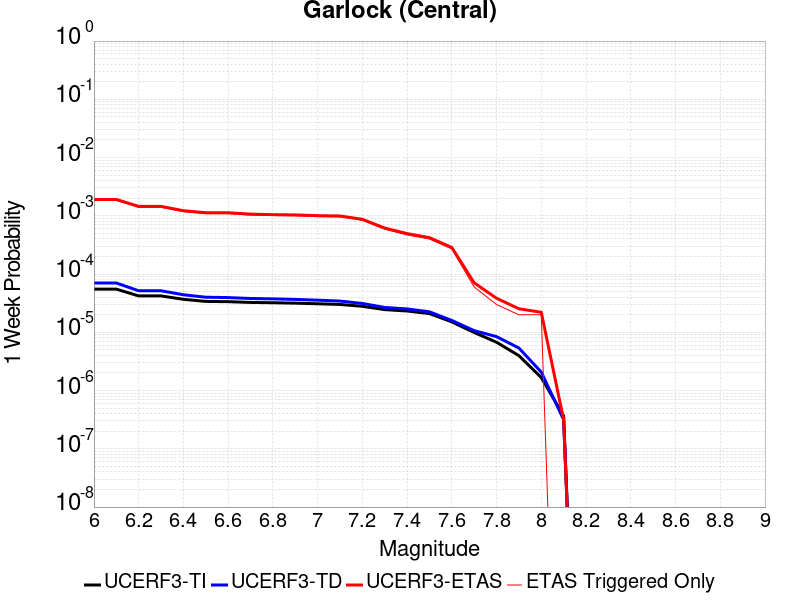 |  | 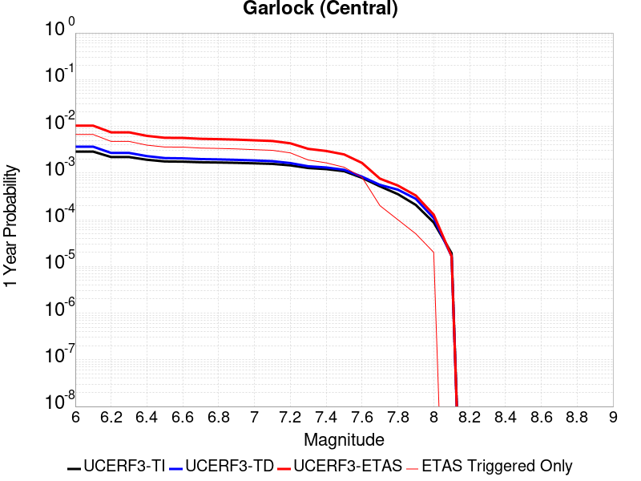 |  |
 | 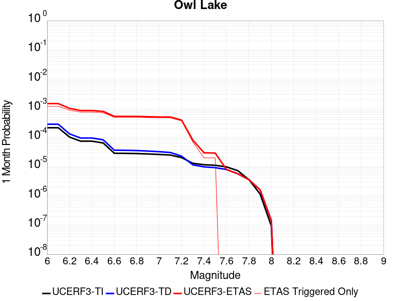 |  |  |
| 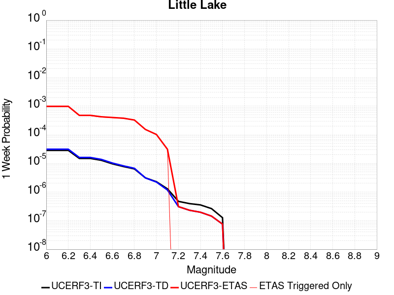 |  |  | 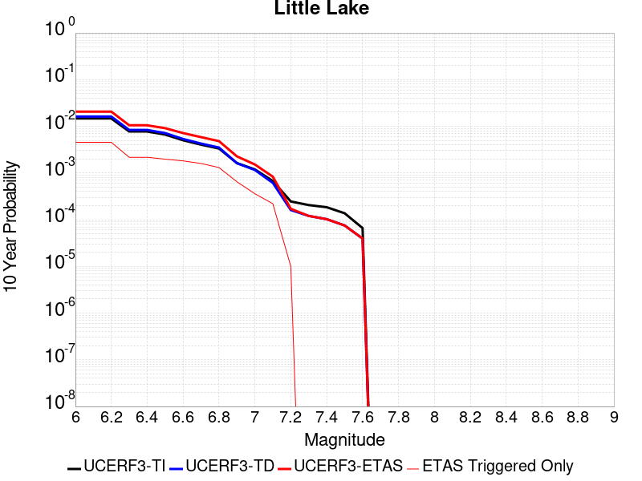 |
| 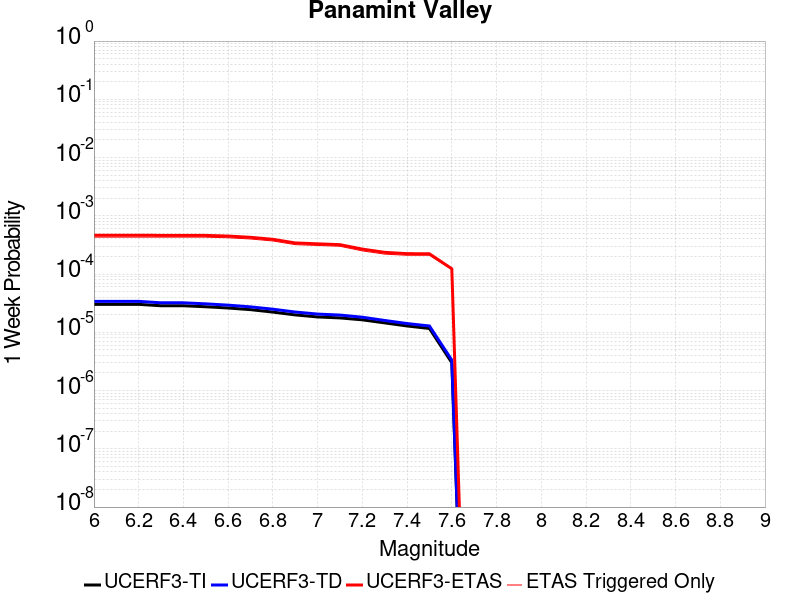 |  |  |  |
| Min Mag | Triggered Ruptures (no spontaneous) | Triggered Ruptures (primary aftershocks only) |
|---|---|---|
| M≥2.5 |  | |
| M≥5 |  |  |
| M≥6 |  |  |
| M≥7 |  |
{
"numSimulations": 100000,
"duration": 10.0,
"startTimeMillis": 1562383130000,
"includeSpontaneous": false,
"randomSeed": 1568917183860,
"binaryOutput": true,
"binaryOutputFilters": [
{
"prefix": "results_complete",
"descendantsOnly": false
},
{
"prefix": "results_m5_preserve_chain",
"minMag": 5.0,
"preserveChainBelowMag": true,
"descendantsOnly": false
}
],
"forceRecalc": false,
"simulationName": "ComCat M6.4 (ci38443183), 1.4 Days After, ShakeMap Surface",
"numRetries": 3,
"outputDir": "/home/scec-02/kmilner/ucerf3/etas_sim/2019_09_19-ComCatM6p4_ci38443183_1p4DaysAfter_ShakeMapSurface",
"triggerRuptures": [
"omitted due to length, see original input file"
],
"cacheDir": "/home/scec-02/kmilner/ucerf3/ucerf3-etas-launcher/inputs/cache_fm3p1_ba",
"fssFile": "/home/scec-02/kmilner/ucerf3/ucerf3-etas-launcher/inputs/2013_05_10-ucerf3p3-production-10runs_COMPOUND_SOL_FM3_1_SpatSeisU3_MEAN_BRANCH_AVG_SOL.zip",
"probModel": "FULL_TD",
"applySubSeisForSupraNucl": true,
"totRateScaleFactor": 1.14,
"gridSeisCorr": true,
"timeIndependentERF": false,
"griddedOnly": false,
"imposeGR": false,
"includeIndirectTriggering": true,
"gridSeisDiscr": 0.1,
"catalogCompletenessModel": "RELAXED",
"configCommand": "u3etas_comcat_event_config_builder.sh --event-id ci38443183 --num-simulations 100000 --days-before 7 --hours-after 33.75 --mag-complete 3.5 --finite-surf-shakemap --finite-surf-shakemap-min-mag 5 --hpc-site USC_HPC --nodes 36 --hours 24 --queue scec_hiprio",
"configTime": 1568917183860,
"comcatMetadata": {
"region": {
"border": [
{
"latitude": 35.46606927860588,
"longitude": -117.62064836613342
},
{
"latitude": 35.47242991448156,
"longitude": -117.6498484716345
},
{
"latitude": 35.482817097748814,
"longitude": -117.67725529634286
},
{
"latitude": 35.49691670426917,
"longitude": -117.70203917688171
},
{
"latitude": 35.514302148883885,
"longitude": -117.72344871893849
},
{
"latitude": 35.53444712853589,
"longitude": -117.740833427602
},
{
"latitude": 35.55674138030309,
"longitude": -117.75366346613521
},
{
"latitude": 35.58050900338554,
"longitude": -117.76154594446818
},
{
"latitude": 35.60502881482475,
"longitude": -117.76423722085674
},
{
"latitude": 35.62955614241808,
"longitude": -117.76165080029024
},
{
"latitude": 35.653345407425206,
"longitude": -117.7538605308302
},
{
"latitude": 35.67567281660627,
"longitude": -117.74109893258196
},
{
"latitude": 35.69585846994947,
"longitude": -117.72375064066809
},
{
"latitude": 35.70566333145525,
"longitude": -117.71170629761008
},
{
"latitude": 35.70566333145525,
"longitude": -117.71170629761014
},
{
"latitude": 35.70604238815803,
"longitude": -117.71216240932166
},
{
"latitude": 35.76524712489848,
"longitude": -117.63773705073073
},
{
"latitude": 35.76486865082265,
"longitude": -117.63728199248203
},
{
"latitude": 35.772417151467366,
"longitude": -117.62800253779777
},
{
"latitude": 35.78655747637844,
"longitude": -117.60316383309643
},
{
"latitude": 35.79697785368919,
"longitude": -117.57566815989048
},
{
"latitude": 35.80336015548857,
"longitude": -117.54635406555744
},
{
"latitude": 35.805509472304436,
"longitude": -117.51611643970001
},
{
"latitude": 35.80336015548857,
"longitude": -117.48587881384258
},
{
"latitude": 35.79697785368919,
"longitude": -117.45656471950953
},
{
"latitude": 35.78655747637844,
"longitude": -117.4290690463036
},
{
"latitude": 35.772417151467366,
"longitude": -117.40423034160224
},
{
"latitude": 35.75498837541371,
"longitude": -117.38280495592575
},
{
"latitude": 35.73480267770123,
"longitude": -117.36544386521685
},
{
"latitude": 35.7124752324186,
"longitude": -117.35267289760742
},
{
"latitude": 35.68868594393053,
"longitude": -117.34487696375908
},
{
"latitude": 35.66415860829961,
"longitude": -117.34228874363933
},
{
"latitude": 35.639638805221665,
"longitude": -117.34498212612748
},
{
"latitude": 35.61587120587691,
"longitude": -117.35287053842218
},
{
"latitude": 35.593576990351565,
"longitude": -117.3657101464031
},
{
"latitude": 35.57343205507307,
"longitude": -117.3831077603277
},
{
"latitude": 35.563574498740074,
"longitude": -117.39525599871091
},
{
"latitude": 35.563197920827314,
"longitude": -117.39480322031359
},
{
"latitude": 35.50414260374059,
"longitude": -117.46922024379369
},
{
"latitude": 35.50451976618846,
"longitude": -117.46967407618439
},
{
"latitude": 35.49691670426917,
"longitude": -117.47903697011829
},
{
"latitude": 35.482817097748814,
"longitude": -117.50382085065715
},
{
"latitude": 35.47242991448156,
"longitude": -117.5312276753655
},
{
"latitude": 35.46606927860588,
"longitude": -117.56042778086658
},
{
"latitude": 35.46392748629558,
"longitude": -117.5905380735
}
]
},
"eventID": "ci38443183",
"minDepth": -10.0,
"maxDepth": 24.0,
"minMag": 2.5,
"startTime": 1561656829000,
"endTime": 1562383129000,
"magComplete": 3.5
}
}